3 Arbeitsplätze und Tätigkeiten:
Gefährdungen und Maßnahmen
3.1 Grundsätzliche Maßnahmen und Gefährdungen
3.1.1 Absturz
Auf höher gelegenen Arbeitsplätzen und Verkehrswegen besteht bei Reinigungsarbeiten die Möglichkeit des Absturzes von Personen auf eine tiefer gelegene Fläche oder einen Gegenstand. Als Absturz gilt aber auch das Durchbrechen durch eine nicht tragfähige Fläche oder das Hineinfallen sowie das Versinken in flüssigen oder körnigen Stoffen. Als Absturzkante wird dabei die Kante an einem Arbeitsmittel oder einer baulichen Anlage bezeichnet, über die eine Person abstürzen kann. Eine Absturzkante ist auch der Übergang von einer tragfähigen zu einer nicht tragfähigen Fläche.
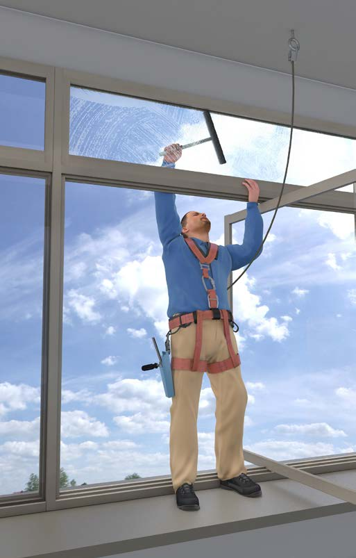
|
|
Abb. 1 Einsatz von PSAgA bei Fensterreinigung |
Abb. 2 PSAgA auf Glasdächern |
|
Weitere Informationen
|
- DIN 4426, Stand Januar 2017 "Einrichtungen zur Instandhaltung baulicher Anlagen – Sicherheitstechnische Anforderungen an Arbeitsplätze und Verkehrswege – Planung und Ausführung"
|
|
Gefährdungen
|
|
Bei Reinigungsarbeiten auf höher gelegenen Arbeitsplätzen ohne entsprechende Schutzmaßnahmen besteht grundsätzlich Absturzgefahr. Unfälle mit bleibenden Beeinträchtigungen der Gesundheit können schon beim Absturz aus geringen Höhen die Folge sein. Achten Sie bei der Nutzung von höher gelegenen Arbeitsplätzen oder Verkehrswegen insbesondere auf die folgenden Gefährdungen:
- Absturz nach innen und außen
- Durchsturz aufgrund unzureichender Tragfähigkeit
|
|
Maßnahmen
|
|
Allgemeine Anforderungen
Sorgen Sie dafür, dass Arbeitsplätze und Verkehrswege bei Reinigungsarbeiten so eingerichtet werden, dass die Gefährdungen durch Absturz von Personen vermieden werden. Ziehen Sie technische Maßnahmen, die einen Absturz verhindern (z. B. Geländer) den organisatorischen Maßnahmen oder der persönlichen Schutzausrüstung gegen Absturz (PSAgA) vor. Legen Sie die Maßnahmen gegen Absturz von Personen in Ihrer Gefährdungsbeurteilung fest.
Bei Arbeitsplätzen oder Verkehrswegen an oder über Wasser oder anderen festen oder flüssigen Stoffen, in denen man versinken kann, sind ab 0 m Höhe Maßnahmen gegen Absturz erforderlich. Für Arbeiten wie Glas- und Fassadenreinigungsarbeiten sind grundsätzlich ab 2 m Absturzhöhe Maßnahmen vorzusehen.
Für die Verwendung von Leitern sind die oben genannten Maße nicht maßgebend. Weiteres ist dem Kapitel Leitern zu entnehmen.
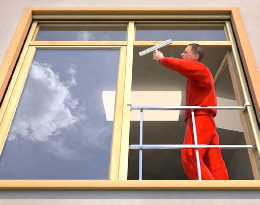
Abb. 3 Mobiles Schutzgeländer in Fensterrahmen
Ausführung der Absturzsicherung
Sorgen Sie dafür, dass Umwehrungen, z. B. Brüstungen, Geländer, Gitter oder Seitenschutz, entsprechend der Nutzung so ausgebildet sind, dass sie den zu erwartenden Belastungen standhalten und ein Hinüber- oder Hindurchfallen von Beschäftigten verhindern.
Die Umwehrungen müssen grundsätzlich mindestens 1,00 m hoch sein. Diese Forderung ist auch erfüllt, wenn Seitenschutz angebracht ist, der dem örtlich geltenden Baurecht entspricht. Die Höhe der Umwehrungen darf bei Brüstungen bis auf 0,80 m verringert werden, wenn die Tiefe mindestens 0,20 m beträgt, zum Beispiel eine 0,20 m breite Fensterbank.
| |
 |
Falls bei der Fensterreinigung von innen die Höhe der Brüstung nicht ausreichend ist, können u. a. mobile Schutzgeländer verwendet werden. |
Auf Baustellen und Gerüsten müssen Umwehrungen immer mindestens 1,0 m hoch sein.
Lassen sich keine Absturzsicherungen einrichten, sind nachrangig persönliche Schutzausrüstungen gegen Absturz als individuelle Schutzmaßnahme zu verwenden.
Beachten Sie, dass bei der Verwendung von PSAgA weiterführende Maßnahmen notwendig sind, z. B. Einweisung, spezielle Unterweisung mit praktischer Übung, Rettungskonzept.
Legen Sie vor Beginn der Arbeiten die geeigneten Anschlagpunkte fest und sorgen Sie dafür, dass die PSAgA benutzt wird.
Berücksichtigen Sie vor der Verwendung der PSAgA, dass mögliche Hindernisse (z. B. Maschinen) den erforderlichen Freiraum einschränken und damit zu Verletzungen durch Aufprall führen oder das Verbindungssystem beschädigen können.
Auf flach geneigten Flächen kann auf Absturzsicherungen verzichtet werden, wenn der Gefahrenbereich 2,0 m von der Kante entfernt zum Beispiel mit einer Kette abgesperrt ist.
Bodenöffnungen sind gegen Hineintreten und Absturz zu sichern. Dies kann durch Einbau tragfähiger und unverschiebbarer Abdeckungen oder durch Seitenschutz erfolgen.
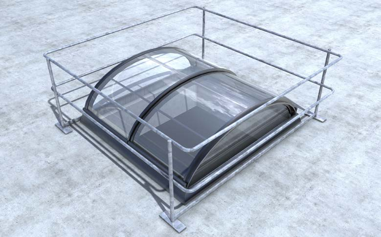
Abb. 4 Sicherung Lichtkuppel
Sicherung gegen Durchsturz
Bei Arbeiten auf Glasflächen oder auf anderen lichtdurchlässigen Flächen muss der Nachweis der Begehbarkeit vorliegen. Dies gilt allgemein für Flächen, bei denen die Tragfähigkeit nicht vorausgesetzt werden kann.
Ist die Tragfähigkeit nicht gegeben oder lässt sie sich nicht nachweisen, sorgen Sie dafür, dass die Gefahr des Durchstürzens verringert wird. Dies kann zum Beispiel durch lastverteilende Beläge in Kombination mit Absturzsicherung (z. B. Seitenschutz) erreicht werden, von denen aus dann die Arbeiten sicher durchgeführt werden können.
Für Arbeiten und Verkehrswege im Gefahrenbereich (Abstand ≤ 2,0 m) von nicht durchtrittsicheren Lichtkuppeln und Lichtbändern ist sicherzustellen, dass durch Absperrungen oder Abdeckungen ein Absturz verhindert wird. Hierauf kann verzichtet werden, wenn der Aufsatzkranz des nicht durchtrittsicheren Bauteils, z. B. der Lichtkuppel, mindestens 0,50 m über die Dachfläche hinausragt.
|
3.1.2 Gefahrstoffe und Feuchtarbeit in der Gebäudereinigung
Bei der Gebäudereinigung können Ihre Beschäftigten durch den Einsatz von Reinigungs-, Desinfektions- und Pflegemitteln oder durch Tätigkeiten, bei denen Stäube bzw. Aerosole freigesetzt werden, in Kontakt mit Gefahrstoffen kommen. Die Gefahr für Sicherheit und Gesundheit können Sie am effektivsten durch die Verwendung unbedenklicherer Arbeitsstoffe oder Arbeitsverfahren reduzieren oder sogar vermeiden.
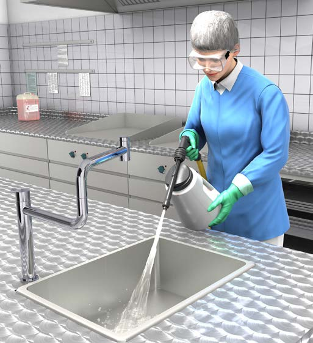
|
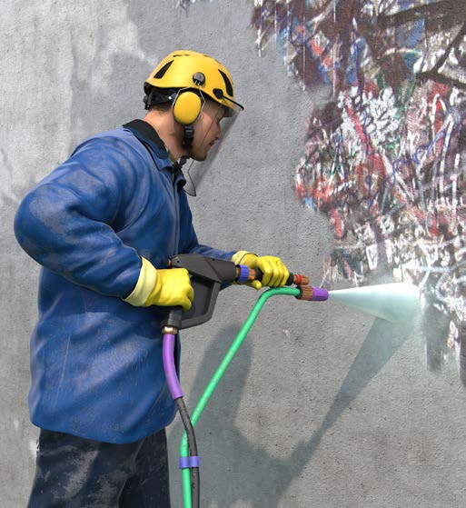
|
Abb. 5 Reiniger aufsprühen |
Abb. 6 Graffiti entfernen |
|
Weitere Informationen
|
- Spezielle Informationen zu den Gefahrstoffen sind in Sicherheitsdatenblättern der Hersteller zu finden.
- Gefahrstoffdatenbanksysteme (z. B. WINGIS unter www.wingis.de)
- Baustein-Merkheft der BG BAU, Abrufnr. der BG BAU 406 "Gebäudereiniger"
|
|
Gefährdungen
|
|
Gefahrstoffe können durch direkten Kontakt Schäden verursachen oder über die Atemwege, die Haut oder durch Verschlucken in den Körper gelangen.
Bei den Gefahrstoffen kann man unterscheiden zwischen solchen, die durch Arbeitsverfahren freigesetzt werden (Stäube, Aerosole), und Gefahrstoffen, die als Reinigungs- und Pflegemittel eingesetzt werden.
Gefährdungen durch Reinigungs- und Pflegemittel
- Allergie auslösende Stoffe (z. B. Aldehyde in Desinfektionsreinigern);
- reizende oder ätzende Stoffe (z. B. Säuren in Sanitärreinigern oder Alkalien in Grundreinigern);
- lösemittelhaltige Produkte (z. B. Abbeizer und Graffiti-Entferner, Holz- und Steinpflegemittel).
Gefährdung durch Arbeiten im feuchten Milieu (Feuchtarbeit)
Gefährdungen durch Stäube oder Aerosole, z. B.
- bei der Baureinigung
- beim Sprühen von Reinigungsmitteln
- beim Hochdruckreinigen
|
|
Abb. 7 Auftragen mit umgekrempelten Stulpen |
Abb. 8 Geschädigte Haut an der Handinnenseite |
|
|
Maßnahmen
|
|
Allgemeines
Bei der Auswahl von Schutzmaßnahmen ist zunächst zu prüfen, ob Gefahrstoffe substituiert (ersetzt) werden können. Ist dies nicht möglich, sind technische Schutzmaßnahmen zu ergreifen, bevor organisatorische oder persönliche Schutzmaßnahmen (TOP-Prinzip) in Betracht kommen.
Als Unternehmerin und Unternehmer sind Sie für die Einhaltung der Arbeitsplatzgrenzwerte (AGW) verantwortlich. Die Einhaltung der AGW ist eine Voraussetzung dafür, dass der Gesundheitsschutz Ihrer Beschäftigten gewährleistet ist.
Für Gefahrstoffe, für die kein AGW existiert, ist das Minimierungsgebot anzuwenden, d.h. die Gefahrstoffe müssen unter Berücksichtigung des TOP-Prinzips und des Standes der Technik so weit wie möglich reduziert werden.
Zudem müssen Sie bei der Gefährdungsbeurteilung auch die Aufnahme über die Haut berücksichtigen, sowie gegebenenfalls die Brand- und Explosionsgefährdungen prüfen.
Arm- und Handschmuck dürfen bei der Arbeit nicht getragen werden.
Maßnahmen bei der Verwendung von Reinigungs- und Pflegemitteln
- Arbeitsverfahren und Produkte so auswählen, dass die gesundheitliche Gefährdung der Beschäftigten so gering wie möglich ist;
- Produkte nicht in Pausen-, Aufenthaltsräumen oder Verkehrswegen lagern;
- Nahrungs- oder Genussmittel nur so aufbewahren, dass sie nicht mit Reinigungs- oder Pflegemitteln in Kontakt kommen;
- Reinigungs- und Pflegemittel möglichst im Originalgebinde lagern. Gebinde müssen verschlossen sein. Werden Gebinde mit mehr als 20 l Fassungsvolumen gelagert, sind Auffangwannen erforderlich. Auch beim Umfüllen sollten Originalgebinde verwendet werden. Werden andere (geeignete) Gebinde benutzt, sind diese wie das Originalgebinde zu kennzeichnen;
- keine Getränkeflaschen verwenden;
- beim Umfüllen Dosier- oder Zapfvorrichtungen verwenden;
- Schutzbrillen oder -schirme benutzen, wenn die Gefahr des Verspritzens besteht.
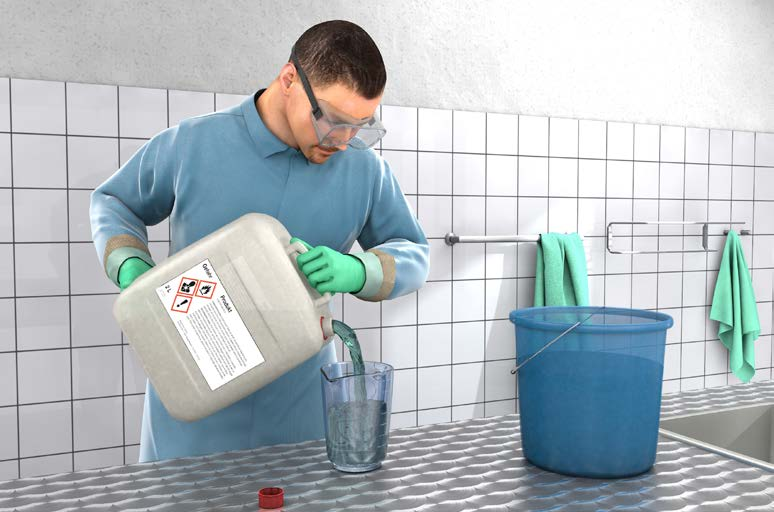
Abb. 9 Umfüllen von Konzentraten
Reinigungs- und Pflegemittel dürfen in der Regel nicht gemischt werden. Das gilt auch für die Entsorgung von Restmengen.
Beim Ansetzen der Reinigungsflotte ist grundsätzlich kaltes Wasser zu verwenden, um das verstärkte Auftreten von Dämpfen zu vermeiden. Das Reinigungsmittel sollte dem Wasser zugegeben werden, nicht umgekehrt.
Überdosierungen sind zu vermeiden und Dosiersysteme (z. B. Dosierflaschen, Dosieranlagen) sollten benutzt werden. Gegebenenfalls sollte Atemschutz verwendet werden.
| |
|
Hinweise erhalten Sie in WINGIS. |
Bei Kontakt mit Reinigungs- und Pflegemitteln müssen Schutzhandschuhe getragen werden, jedoch keine Einmalhandschuhe aus Latex.
Nach der Arbeit und vor den Pausen sollten die Hände gewaschen und Hautpflegemittel aufgetragen werden.
Betriebsanweisungen
Liegt eine Gefährdung durch Gefahrstoffe vor, muss vor Beginn der Arbeiten eine Betriebsanweisung erstellt werden. Die Gefahrstoffdatenbank "WINGIS" bietet Entwürfe für Betriebsanweisungen in vielen Sprachen. Hier finden Sie auch Hinweise, in welchen Fällen keine Betriebsanweisung erforderlich ist.
Es ist nicht notwendig, für jedes einzelne Produkt eine eigenständige Betriebsanweisung zu erstellen. Mit dem "GISCODE" werden Reinigungs- und Pflegemittel zu Produktgruppen zusammengefasst, die vergleichbare Gefährdungen aufweisen und demzufolge identische Schutzmaßnahmen und Verhaltensregeln erfordern. Dadurch können Sie die Vielzahl einzelner Produkt-Betriebsanweisungen auf wenige Produktgruppen-Betriebsanweisungen reduzieren. Die Hersteller geben den GISCODE in ihren Sicherheitsdatenblättern, Technischen Merkblättern und auf den Gebindeetiketten an.

Abb. 10 Betriebsanweisung
Unterweisung
Ein Schwerpunkt der Unterweisung beim Umgang mit Gefahrstoffen muss die Vermittlung der gesundheitsgefährdenden Wirkung der Gefahrstoffe und der notwendigen Schutzmaßnahmen darstellen.
Grundlage der Unterweisung ist die Betriebsanweisung.
Beschäftigungsbeschränkungen
Sie dürfen Jugendliche ab 15 Jahren nur Tätigkeiten mit Gefahrstoffen ausführen lassen, wenn diese zum Erreichen des Ausbildungszieles erforderlich sind, der Arbeitsplatzgrenzwert unterschritten wird und eine fachkundige Aufsicht sowie die betriebsärztliche oder sicherheitstechnische Betreuung gewährleistet sind.
Schwangere oder stillende Frauen dürfen keine Tätigkeiten mit Gefahrstoffen ausüben, die für sie oder ihr Kind eine unverantwortbare Gefährdung darstellen. Eine unverantwortbare Gefährdung liegt beispielsweise bei schwangeren Frauen vor, wenn Tätigkeiten mit fruchtschädigenden Gefahrstoffen ausgeübt werden oder wenn bei einer Tätigkeit der Arbeitsplatzgrenzwert überschritten wird.
Maßnahmen bei Feuchtarbeit
Es sollte ein Wechsel von Nass- und Trockenreinigung stattfinden.
Bei Feuchtarbeit oder beim Tragen flüssigkeitsdichter Handschuhe von regelmäßig mehr als zwei Stunden bis vier Stunden je Tag ist arbeitsmedizinische Vorsorge anzubieten.
Bei Feuchtarbeit oder beim Tragen flüssigkeitsdichter Handschuhe von regelmäßig vier Stunden oder mehr je Tag ist arbeitsmedizinische Vorsorge zu veranlassen.
Maßnahmen gegen Gefährdungen durch Stäube bzw. Aerosole
Einsatz von
- Bau-Entstaubern zur Baureinigung statt Kehren;
- emissionsarmen Hochdruckreinigern (Hochdruckreiniger mit Reinigungshaube und Absaugung);
- Niederdruckstrahlgeräten;
- Gegebenenfalls Atemschutz
|
3.1.3 Elektrischer Strom/Elektrische Gefährdung
Elektrische Wechselspannungen von mehr als 50 Volt stellen immer eine potenzielle Gefahr dar, da sie bei Kontakt mit dem menschlichen Körper Durchströmungen mit tödlichem Ausgang verursachen können. Ein Kontakt mit elektrischer Spannung ist auf verschiedene Art und Weise möglich. Im Arbeitsbereich sind elektrische Freileitungen oder elektrische Anlagen in Gebäuden anzutreffen, von denen eine Gefährdung ausgehen kann. Weiterhin können Gefährdungen durch Fehler in elektrischen Anlagen, unzureichende Schutzmaßnahmen oder ungeeignete Arbeitsmittel entstehen.
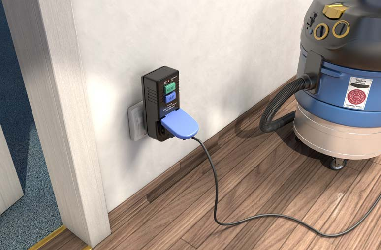
|
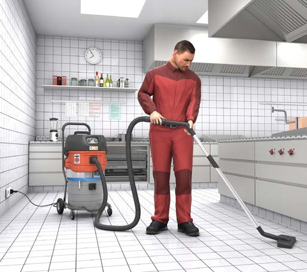
|
Abb. 11 Schutzadapter für Schutzisolierte Geräte |
Abb. 12 Anschluss eines Betriebsmittels nur an geprüfter Steckdose |
|
Weitere Informationen
|
- Baustein-Merkheft der BG BAU, Abrufnr. der BG BAU 406 "Gebäudereiniger"
|
|
Gefährdungen
|
|
Achten Sie bei Reinigungsarbeiten insbesondere auf elektrische Gefährdungen wie
- Körperdurchströmungen und Lichtbögen.
Diese Gefährdungen können hervorgerufen werden durch:
- Arbeiten mit ungeeigneten oder beschädigten Arbeitsmitteln
- Nutzung von Steckdosen mit ungeeigneten oder fehlenden Fehlerstromschutzeinrichtungen
- Arbeiten mit nassen Reinigungstextilien in der Nähe von Steckdosen oder Schaltern
- Unzureichend gesicherte oder beschädigte elektrische Anlagen, z. B. Photovoltaikanlagen oder aus Wand und Decke hängende Leitungen
- Kontakt bzw. Unterschreitung von Mindestabständen zu Freileitungen
|
|
Maßnahmen
|
|
Anschlusspunkte
Verwenden Sie zum Betrieb Ihrer elektrischen Arbeitsmittel nur Anschlusspunkte mit 30 mA – Fehlerstrom-Schutzeinrichtungen (RCD auch "FI-Schalter" genannt). Klären Sie mit Ihrer Auftraggeberin bzw. Ihrem Auftraggeber, ob Ihnen entsprechende Anschlusspunkte zur Verfügung gestellt werden.
| |
|
Alternativ können ortsveränderliche (Portable) Schutzeinrichtungen, z. B. PRCD-S oder bei schutzisolierten Geräten PRCD, verwendet werden. |
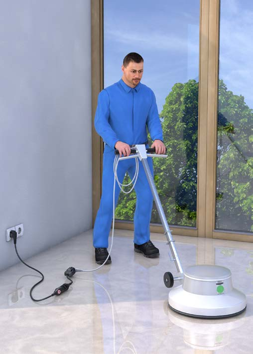
Abb. 13 PRCD-S im Einsatz
Elektrische Betriebsmittel
Verwenden Sie nur elektrische Betriebsmittel, die für den gewerblichen Einsatz geeignet sind und der Beanspruchung am Arbeitsplatz genügen.
| |
|
Verwenden Sie vorzugsweise Handgeräte der Schutzklasse II, welche auch für den rauen Betrieb geeignet sind und ebenfalls einen ausreichenden Schutz gegen eindringende Feuchtigkeit aufweisen. |
Setzen sie nur Verlängerungsleitungen der Bauart H07RN-F oder H07BQ-F ein.
Beschaffen Sie Leitungsroller (Kabeltrommeln) aus Kunststoff bei denen der Trage- und Kurbelgriff isoliert ist.
Kabeltrommeln sollten mindestens die Schutzart IP 44 erfüllen.
| |
|
Einen sehr guten Schutz gegen elektrische Gefährdungen bieten Akkumaschinen. |

Abb. 14 Mögliche Kennzeichnungen elektrischer Geräte

Abb. 15 Prüfkennzeichnung für elektrische Geräte
Prüfen Sie regelmäßig die Betriebsmittel und setzen Sie nur unbeschädigte Betriebsmittel ein. Prüfungen sind zu dokumentieren.
Prüfungen werden von Elektrofachkräften durchgeführt. Stehen für die Mess- und Prüfaufgaben geeignete Mess- und Prüfgeräte zur Verfügung, dürfen auch elektrotechnisch unterwiesene Personen unter Leitung und Aufsicht einer Elektrofachkraft prüfen.
Photovoltaikanlagen
Stellen Sie sicher, dass bei Arbeiten in der Nähe von Photovoltaikanlagen diese nicht berührt oder betreten werden.
Führen Sie keine Arbeiten im Bereich von Photovoltaikanlagen durch, bevor nicht Elektrofachkräfte eindeutige Arbeitsanweisungen und Freigabe erteilt haben. Führen Sie Reinigungsarbeiten an Photovoltaikanlagen nur durch, wenn nachgewiesen ist, dass diese keine elektrischen Fehler (z. B. Isolationsfehler zur Unterkonstruktion) aufweisen.
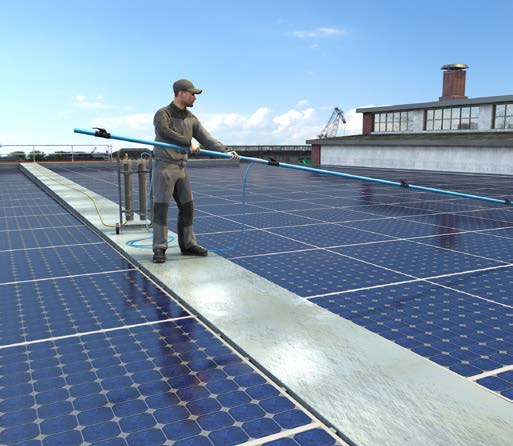
Abb. 16 Reinigung von Photovoltaikanlagen mit entmineralisiertem Wasser
Steckdosen, Schalter und Beleuchtungskörper
Achten Sie darauf, dass beim Nassreinigen kein Wasser in Steckdosen, Schalter oder Beleuchtungskörper laufen kann.
Reinigen Sie alle Leuchtkörper nur im ausgeschalteten Zustand.
Abb. 17 Richtiges Ziehen des Steckers
Mindestabstände zu Freileitungen
Wenn in der Nähe von elektrischen Freileitungen gearbeitet werden muss, stellen Sie sicher, dass der Mindestabstand von 5 m zu den Freileitungen weder mit Körperteilen noch Arbeitsgeräten unterschritten wird.
In Abhängigkeit zur Nennspannung ist ein geringerer Abstand möglich. Nehmen Sie dazu Kontakt zur netzbetreibenden Firma auf und stimmen Sie Maßnahmen gegen das direkte Berühren ab.
|
3.1.4 Ergonomie
Körperliche Belastungen der Beschäftigten sind auch in der Gebäudereinigung von Bedeutung. Die ergonomische Gestaltung von Arbeitsplätzen und -mitteln kann Erkrankungen verhindern, die Gesundheit sowie die Arbeitsfähigkeit der Beschäftigten fördern und die Produktivität des Unternehmens steigern.
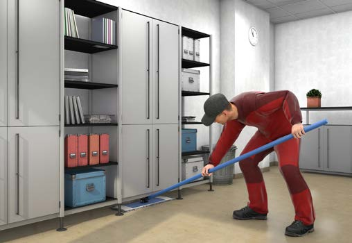
|
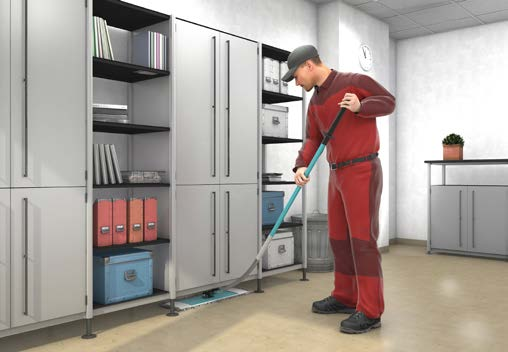
|
Abb. 18 Unergonomisches Arbeiten |
Abb. 19 Ergonomische Haltung |
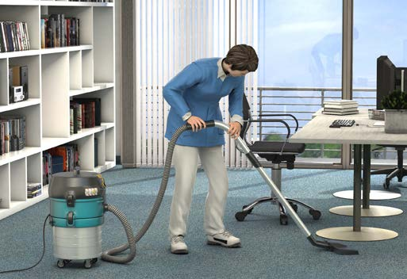
|
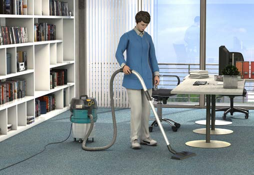
|
Abb. 20 Unergonomisches Arbeiten |
Abb. 21 Ergonomische Haltung |
|
Weitere Informationen
|
- DGUV Information 206-007 "So geht’s mit Ideen-Treffen"
- DGUV Information 208-033 "Belastungen für Rücken und Gelenke – was geht mich das an?"
- BG BAU-Broschüre "Ergonomie am Bau – Damit es leichter geht" Abruf-Nr. BG BAU 625
- BG BAU-Broschüre "Ergonomie am Bau – Das kann jeder tun!" Abruf-Nr. BG BAU 625.1
- Fachthema Gebäudereiniger-Handwerk, "Sicher und gesund im Beruf" Abruf-Nr. BG BAU 705.11
- www.ergonomie-bau.de
|
|
Gefährdungen
|
|
Folgende körperliche Belastungen können zu Gesundheitsschäden der Wirbelsäule, der Gelenke und der Muskulatur führen und somit die Gesundheit der Beschäftigten negativ beeinflussen:
- Arbeiten in Zwangshaltungen (Bücken, Knien, Hocken, Arbeiten über Schulterniveau)
- Arbeiten mit gleichförmigen Bewegungsabläufen, insbesondere bei erhöhter Kraftanstrengung (z. B. Reinigung von großflächigen Böden und Wänden, Fassadenreinigung mit Stangensystemen)
- Bewegungsarmut durch lang andauerndes Sitzen beim Führen von Maschinen
- Heben, Halten und Tragen von schweren Lasten oder Bewegen von Einrichtungsgegenständen ohne geeignete Hilfsmittel
|
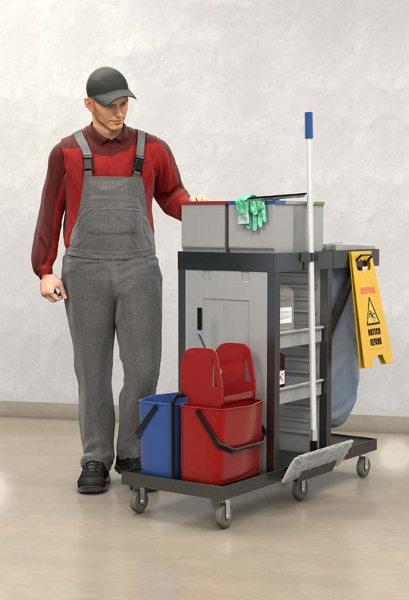
|
Abb. 22 Transport unergonomisch |
Abb. 23 alternativ mit Systemwagen |
|
|
Maßnahmen
|
|
Zur Vermeidung der Belastungen und gesundheitlichen Beeinträchtigungen empfiehlt es sich, Maschinen, Geräte, Arbeitsmittel und -verfahren nach ergonomischen Gesichtspunkten auszuwählen.
Beispiele:
- Einsatz von Randreinigungsgeräten mit Stiel
- Einsatz von teleskopierbaren Arbeitsmitteln
- Wassereinfüllhilfen
- Einsatz von Handfegern mit langem Stiel
- Einsatz von Verladerampen
- Einsatz von Systemwagen (für beengte Verhältnisse, z. B. in Putzkammern oder Aufzügen gibt es kleine Systemwagen)
Arbeitsabläufe
Organisieren Sie Arbeitsabläufe nach ergonomischen Gesichtspunkten.
Sorgen Sie dafür, dass ein regelmäßiger Wechsel der Arbeitshaltungen oder auch der Arbeitstätigkeiten erfolgt. Verteilen Sie unvermeidbare Belastungen auf mehrere Beschäftigte, z. B. stangengeführtes Reinigungssystem.
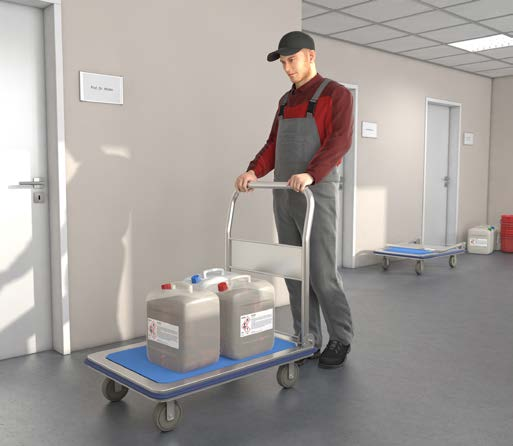
Abb. 24 Ergonomischer Transport schwerer Lasten
Verhalten
Weisen Sie Ihre Belegschaft in ergonomische Arbeitsverfahren, Maschinen und Geräte ein, z. B. in die Längeneinstellung des Teleskopstiels. Neues bedarf der bewussten Übung.
| |
|
Lassen Sie die Beschäftigten wirbelsäulengerechte Bewegungsabläufe sowie Hebe- und Tragetechniken erlernen. |
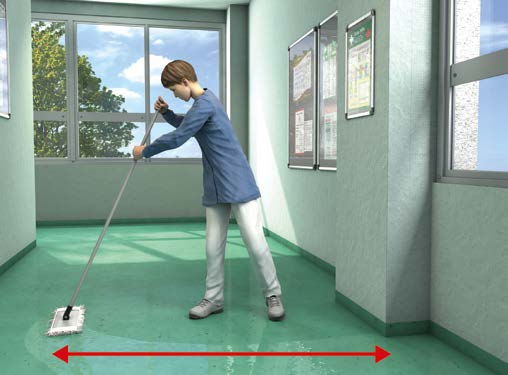
|
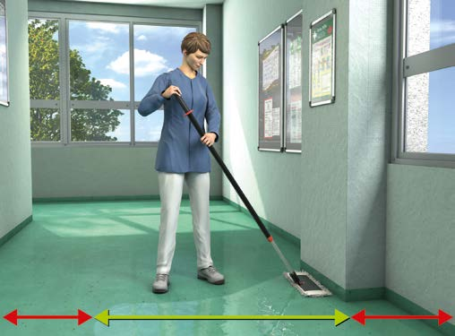
|
Abb. 25 Rückenschädigendes Wischen |
Abb. 26 Wirbelsäulengerechte Bewegung |
|
3.1.5 Psychische Belastungen
Die psychische Belastung der Beschäftigten verändert sich auch in der Gebäudereinigung aufgrund neuer Arbeitsanforderungen. Im Arbeitsalltag sind eng gesetzte Zeitvorgaben einzuhalten, das Arbeitstempo steigt bei gleichzeitig hohen Qualitätsansprüchen an das Arbeitsergebnis. Die Arbeitsgestaltung muss unter Berücksichtigung der psychischen Belastungsfaktoren so gewählt werden, dass die Beschäftigungsfähigkeit der Belegschaft und somit die Produktivität des Unternehmens erhalten bleibt.
Abb. 28 Stärken des Zusammenhalts
|
Gefährdungen
|
|
Psychische Belastung ist neutral definiert als "die Gesamtheit aller Einflüsse, die von außen auf den Menschen zukommen und psychisch auf ihn einwirken" (gemäß DIN EN ISO 10075-1:2018-01). Diese Einflussfaktoren wirken sich individuell auf den Beschäftigten aus und können ihn positiv beanspruchen (z. B. aktivieren, herausfordern) oder ihn negativ beanspruchen (z. B. überfordern, unterfordern).
Unter Belastung versteht man objektive, von außen auf den Menschen einwirkende Faktoren wie z. B. Lärm, Zeitdruck oder widersprüchliche Erwartungen an Mitarbeiterinnen und Mitarbeiter.
Unter Beanspruchung versteht man die subjektiven (individuellen) Folgen dieser Belastung.
Gefährdungen für die Gesundheit der Belegschaft resultieren aus den Folgen der negativen psychischen Beanspruchung (Fehlbeanspruchung). In diesem Fall werden einzelne Belastungsfaktoren (z. B. Zeitdruck, Unterbrechungen im Arbeitsablauf) zum Stressor und die Beanspruchung der Person äußert sich als Stressreaktion. Dauerhafter Stress kann sich psychisch und dadurch auch körperlich auf das Wohlbefinden und die Gesundheit der Beschäftigten auswirken.
Abb. 29 Entspannte Unterweisung
Arbeitsbedingte psychische Belastung kann, je nach Art der Tätigkeit (z. B. Objektleitung, Reinigungskraft), entstehen durch Einflüsse aus der
- Arbeitsaufgabe, z. B.
- zu wenig Handlungsspielraum
- Monotonie der Aufgaben
- hoher Entscheidungsdruck
- fehlende Informationen zu Anforderungen und Erwartungen
- unklare Anforderungen an Objektleitung, die zudem von unterschiedlichen Seiten gestellt werden
- Arbeitsorganisation, z. B.
- Zeitdruck
- Nachtarbeit
- häufige Arbeitsunterbrechungen
- häufiger kurzfristiger Ausfall von Mitarbeiterinnen und Mitarbeitern
- Arbeitsumgebung, z. B.
- Alleinarbeit
- ekelerregende Verschmutzungen
oder auch aus den
- sozialen Beziehungen, z. B.
- Betriebsklima, Konflikte unter Beschäftigten oder mit Vorgesetzen
- Fehlende Anerkennung im Betrieb
- Konflikte mit der Kundschaft
- fehlende gesellschaftliche Wertschätzung
- Der Grad der Gefährdung variiert in Abhängigkeit von
- Art, Häufigkeit und Intensität der auftretenden Fehlbelastung/Stressoren
- individuellen Leistungsvoraussetzungen und (Stress-)Bewältigungsstrategien der Person, auch Ressourcen genannt,
- Gegebenheiten im Betrieb im Hinblick auf die Arbeitsgestaltung und -organisation.
|
|
Maßnahmen
|
- Optimierung der Belastungsfaktoren hinsichtlich der Arbeitsaufgabe/-inhalt
- Erhöhung des Handlungsspielraumes bzgl. Arbeitsverfahren, Reihenfolge der Tätigkeiten etc.
- eindeutige Entscheidungswege und Kompetenzen
- Eine optimierte Arbeitsorganisation
- Vertretungsmanagement
- Tourenplanung
- flexible Arbeitszeiten
- Ursachen für Unterbrechungen beseitigen
- Aspekte der Vereinbarkeit von Familie und Beruf bei Arbeitszeiteinteilung/Objektverteilung berücksichtigen
- Bei Nachtarbeit kürzere Arbeitsabschnitte zwischen den Pausen
- Eine optimierte Arbeitsumgebung
- Teamarbeit oder Leistungserbringung während der Nutzungszeit
- Bereitstellung von geeigneten Arbeitsgeräten und -maschinen
- Förderung der sozialen Beziehungen
- positives Feedback geben
- Kritik konstruktiv und in angemessener Form äußern
- persönliche Ansprache ermöglichen (z. B. Namensschilder)
| |
|
Stärkung der Ressourcen (Verhaltensprävention) z. B. |
- durch Einarbeitung der Mitarbeiterinnen und Mitarbeiter und Schulungsangebote
- Fortbildung zur Wissenserweiterung (z. B. Konfliktmanagement, Produktschulung, Förderung der Sozialkompetenzen, Stressbewältigung)
Abb. 30 Stressabbau
|
3.1.6 Persönliche Schutzausrüstungen
Persönliche Schutzausrüstungen (PSA) sind immer dann bereitzustellen und zu benutzen, wenn die technischen und organisatorischen Maßnahmen ausgeschöpft sind und eine Restgefährdung verbleibt, die durch PSA weiter minimiert werden kann. Im Fall des Umganges mit Gefahrstoffen ist vorher außerdem die Substitution zu prüfen. PSA müssen für die jeweiligen Arbeitsbedingungen geeignet sein, den Beschäftigten zur Verfügung stehen und die Kosten für PSA dürfen den Beschäftigten nicht auferlegt werden.
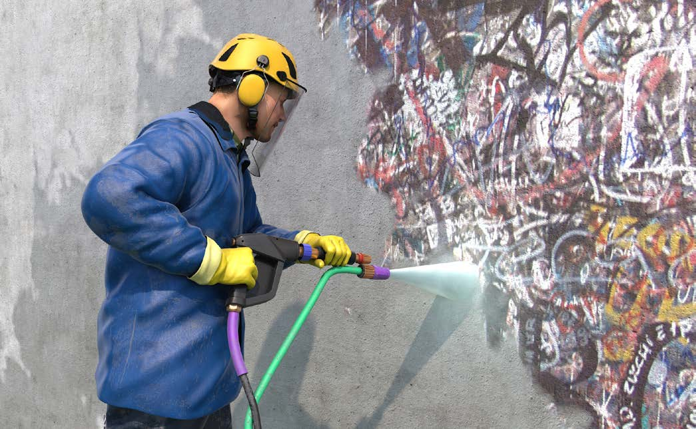
Abb. 30 PSA bei Hochdruckreinigung
|
Gefährdungen
|
|
PSA schützen bei den jeweils auszuführenden Arbeiten vor den Restgefährdungen, welche durch technische oder organisatorische Schutzmaßnahmen nicht ausreichend minimiert werden können.
Dies können sein:
- Physikalische Gefährdungen, z. B. Absturz, Lärm
- Chemische Gefährdungen, z. B. Reinigungsmittel, Desinfektionsmittel
- Biostoffe, z. B. Infektionen durch Krankheitserreger
Gefährdungen können auch durch unsachgemäße Bereitstellung und falsche Benutzung von PSA entstehen, Beispiele:
- falsche Auswahl von PSA
- Verwendung mehrerer PSA-Arten, welche nicht aufeinander abgestimmt sind
- verschmutzte, beschädigte oder abgeänderte PSA
- falsche Konfektionsgröße, abgelaufene Gebrauchsdauer,
- PSA werden nicht den Herstellerangaben entsprechend verwendet
- unsachgemäßes Anlegen der PSA
- eigenmächtige Veränderungen der PSA
|
|
Maßnahmen
|
|
Gefährdungsbeurteilung
Voraussetzung für die Auswahl von geeigneten PSA ist die Kenntnis aller am Arbeitsplatz auftretenden Gefährdungen. Dazu gehören auch Gefährdungen, die durch die Tätigkeiten entstehen bzw. die durch die Arbeitsumgebung gegeben sind.
Wenn mehrere PSA zur Minimierung vieler Gefährdungen gleichzeitig verwendet werden müssen, achten Sie darauf, dass die PSA aufeinander abgestimmt sind und zusammen verwendet werden dürfen (z. B. Helm mit integrierter Schutzbrille und Kapselgehörschutz).
Achten Sie darauf, dass die Gebrauchseigenschaften der PSA auf die Tätigkeit abgestimmt sind und die Beschäftigten durch die PSA nicht unnötig behindert werden.

Abb. 31, 32 Sicherheitsschuh S3
Beschaffung/Bereitstellung
Beschaffen Sie nur PSA, die mit einer CE-Kennzeichnung versehen sind und über Herstellerinformationen verfügen.
PSA müssen den Beschäftigten individuell passen. Auffanggurte, die nicht auf die Körperform abgestimmt sind oder Schutzhelme, die zu klein oder zu groß sind, beeinträchtigen die Schutzwirkung bzw. führen zu zusätzlichen Gefährdungen. Stellen Sie sicher, dass eine ausreichende Anzahl von PSA für den Zeitraum der Tätigkeit zur Verfügung steht.

Abb. 33 CE- Kennzeichnung
| |
|
Hören Sie die Beschäftigten an, bevor Sie PSA zur Verfügung stellen. Die Tragebereitschaft von PSA ist erfahrungsgemäß größer, wenn die Beschäftigten bei der Auswahl der PSA beteiligt werden (ggf. Anprobe). |
Benutzung
Weisen Sie die Beschäftigten an, die PSA bestimmungsgemäß zu benutzen. Dabei ist es hilfreich, auch praktische Übungen durchzuführen. Für einige PSA sind praktische Übungen vorgeschrieben, z. B. PSA gegen Absturz, Atemschutz, Chemikalienschutzhandschuhe.
PSA müssen vor jedem Einsatz auf mögliche Mängel hin in Augenschein genommen werden.
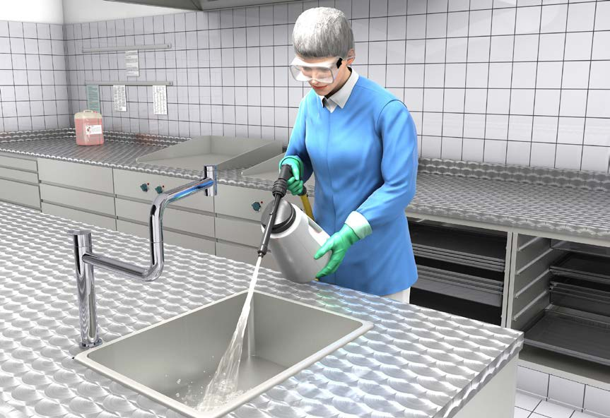
Abb. 34 PSA beim Sprühen
Ordnungsgemäßer Zustand
Sorgen Sie dafür, dass die Überprüfung der Gebrauchstauglichkeit der PSA nach den Angaben der Herstellerinformationen durchgeführt wird. PSA gegen Absturz sind zudem mindestens einmal jährlich durch Sachkundige zu prüfen.
|
3.2 Verwendung von Arbeitsmitteln
3.2.1 Maschinen in der Gebäudereinigung
Maschinen in der Gebäudereinigung sind hauptsächlich Staubsauger, Einscheibenmaschinen, Bürstsauger, Sprühextraktionsgeräte, Hochdruckreinigungsgeräte, Waschmaschinen und Scheuersaugmaschinen. Sie werden die beispielsweise eingesetzt zum Saugen, Reinigen, Polieren, Abtragen, Schamponieren und Hochdruckreinigen. Verfahrensabhängig können unterschiedlichste Gefährdungen auftreten. Erwerben und verwenden Sie ausschließlich Maschinen, die CE-gekennzeichnet und für den Anwendungszweck geeignet sind.
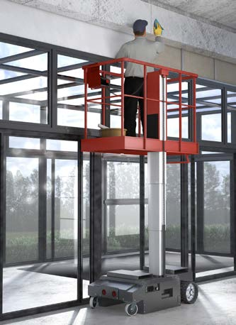
|
|
Abb. 35 Kleinhubarbeitsbühne |
Abb. 36 Scheuersaugmaschine |
|
Weitere Informationen
|
- Empfehlung zur Betriebssicherheit 1114 "Anpassung an den Stand der Technik bei der Verwendung von Arbeitsmitteln" (EmpfBS 1114)
- Baustein-Merkheft "Gebäudereiniger", BG BAU Abr. Nr. 406
|
|
Gefährdungen
|
|
Bei der Verwendung von Maschinen in der Gebäudereinigung können sich Gefährdungen ergeben durch
- Stoßen, Schneiden und Quetschen
- Stolpern und Rutschen
- Elektrische Gefährdung/Mechanische Gefährdung
- Lärm
- Zwangshaltung
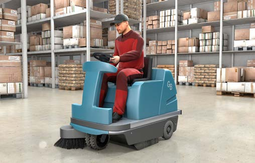
Abb. 37 Aufsitzmaschine
|
|
Maßnahmen
|
|
Stellen Sie sicher, dass die von Ihnen ausgewählte Maschine für das von Ihnen bestimmte Arbeitsverfahren geeignet ist. Die maßgeblichen Informationen sowie Angaben zur bestimmungsgemäßen Verwendung finden Sie in der Betriebsanleitung des Herstellers.
Verwendung
Berücksichtigen Sie die örtlichen Bedingungen am Arbeitsplatz, an dem Sie die Maschine verwenden, wie z. B. Publikumsverkehr, Werksverkehr, Zugänglichkeit des Objekts, Traglasten von Fahrstühlen, geneigten Flächen oder Rampen.
Legen Sie die geeigneten technischen, organisatorischen und persönlichen Schutzmaßnahmen fest.
Sorgen Sie dafür, dass Beschäftigte die Eignung und Befähigung dazu haben, die Maschinen sicher zu bedienen. Ermöglichen Sie Ihren Beschäftigten, die Betriebsanleitung des Herstellers lesen und verstehen zu können.
Ansonsten erstellen Sie eine Betriebsanweisung unter Berücksichtigung der Betriebsanleitung des Herstellers.
Weisen Sie Ihre Beschäftigten vor der erstmaligen Verwendung einer Maschine in den Umgang mit dieser ein.
Abb. 38 Aufsitz-Kehrmaschine
Frischen Sie die Unterweisung mindestens jährlich auf, und erstellen Sie darüber einen schriftlichen Nachweis.
| |
|
Durchführung praktischer Übungen stellt eine gute Ergänzung der Unterweisung dar |
Damit gewährleisten Sie den sicheren Umgang mit der Maschine und beugen so der Stoß-, Schneid- und Quetschgefahr vor.

Abb. 39 Betriebsanweisung Kehrmaschine
Stolpern und Rutschen
Achten Sie in Objekten darauf, dass die Maschinen und Kabel keine Stolperfallen darstellen und bei Publikumsverkehr auf feuchte Flächen durch das Schild "Achtung Rutschgefahr" hingewiesen wird.
Elektrische Gefährdung/Mechanische Gefährdung
Gewährleisten Sie, dass eine regelmäßige Instandhaltung (Inspektion, Wartung, Instandsetzung) gemäß den Betriebsanleitungen der Hersteller durchgeführt wird und dass Ersatzteile den technischen Bestimmungen entsprechen.
Stellen Sie sicher, dass die Instandhaltung ausschließlich von fachkundigen Personen durchgeführt wird.
| |
|
Stellen Sie sicher, dass Maschinen vor jeder Anwendung auf augenfällige Mängel geprüft und die sicherheitsrelevanten Funktionen getestet werden. |
Bestimmen Sie die Intervalle von Prüfungen bzw. Wiederholungsprüfungen mittels Ihrer Gefährdungsbeurteilung. Berücksichtigen Sie hierbei mögliche Vorgaben durch die Hersteller in den Betriebsanleitungen. Nach Beschädigungen, die sicherheitsrelevant sein können, ist eine Prüfung vor der weiteren Nutzung erforderlich.
Sorgen Sie dafür, dass Prüfungen von zur Prüfung befähigten Personen durchgeführt werden. Als Nachweis über die von Ihnen veranlassten Prüfungen ist ein Prüfaufkleber zu empfehlen.
Lärm
Stellen Sie geeignete Gehörschutzmittel zur Verfügung, wenn diese in der Betriebsanleitung gefordert oder verfahrensbedingt Auslösewerte überschritten werden.
Zwangshaltung
Sorgen Sie dafür, dass schwere Maschinen ggfs. von mehr als einer Person transportiert oder Hebe- und Tragehilfen verwendet werden.
Vermeiden Sie länger andauernde Zwangshaltungen, in dem sich beispielsweise die Beschäftigten bei der Bedienung der Maschine abwechseln.

Abb. 40 Beispiel einer Prüfkennzeichnung
|
3.2.2 Einsatz von Hubarbeitsbühnen
Der Einsatz von Hubarbeitsbühnen kann die Produktivität in der Gebäudereinigung steigern, die Arbeit erleichtern sowie den Sicherheits- und Gesundheitsschutz verbessern. Der Einsatz von Hubarbeitsbühnen bietet sich als Alternative zu gefährlichen Arbeiten auf Leitern an. Die Gefährdungen beim Umgang mit Hubarbeitsbühnen sind hauptsächlich der Umsturz der Bühne, der Absturz sowie die Quetschgefährdung der Nutzerinnen und Nutzer. Die in der Gefährdungsbeurteilung festgelegten Maßnahmen und die Fähigkeiten der bedienenden Person bestimmen den sicheren Einsatz.
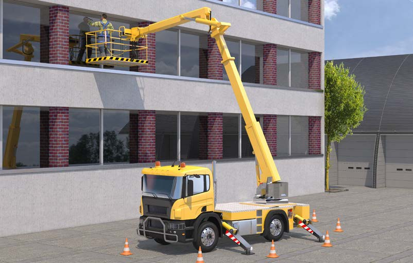
|
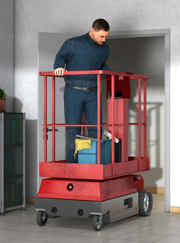
|
Abb. 41 Teleskopbühne im Einsatz |
Abb. 42 Beispiel einer kleinen Bühne für den Innenbereich |
|
Weitere Informationen
|
- DGUV Information 208-019 "Sicherer Umgang mit fahrbaren Hubarbeitsbühnen"
- Empfehlung zur Betriebssicherheit 1114 "Anpassung an den Stand der Technik bei der Verwendung von Arbeitsmitteln" (EmpfBS 1114)
- Baustein-Merkheft "Gebäudereiniger", BG BAU Abr. Nr. 406
|
|
Gefährdungen
|
|
Äußere Einflüsse und das Verhalten des jeweiligen Bedienenden haben wesentlichen Einfluss auf den sicheren Einsatz von Hubarbeitsbühnen. Hierbei können insbesondere folgende Gefährdungen auftreten:
- Absturz durch Herausfallen, Herausschleudern z. B. durch Aufsteigen auf das Geländer, durch Verlassen des Arbeitskorbes im angehobenen Zustand, Hängenbleiben des Geländers an und unter Konstruktionen, Angefahren werden durch andere Fahrzeuge (Peitscheneffekt)
- Quetschen z. B. Einquetschen zwischen Bedienpult bzw. Geländer der Hubarbeitsbühne und Teilen der Umgebung durch Fehlbedienung
- Umsturz der Hubarbeitsbühne z. B. durch Einfahren in Bodenöffnungen oder Überfahren von Absätzen
|
|
Maßnahmen für den Betrieb
|
|
Berücksichtigen Sie im Rahmen der Gefährdungsbeurteilung insbesondere die Hubarbeitsbühne selbst, die Arbeitsumgebung, die Arbeitsabläufe sowie die Eignung der Bedienenden.
Ergibt sich nach der Gefährdungsbeurteilung das Risiko des Herausfallens aus dem Arbeitskorb (z. B. Peitscheneffekt), so sind nur Hubarbeitsbühnen mit geeigneten Anschlagpunkten für PSAgA einzusetzen. Ein kurzes Anschlagen ist erforderlich (max. Verbindungsmittellänge 1,8 m einschl. Falldämpfer), es kann beispielsweise mit einem Höhensicherungsgerät erfolgen, das speziell für die Verwendung zugelassen ist. Sorgen Sie dafür, dass die Beschäftigten in der Nutzung der PSAgA unterwiesen sind und diese benutzen.
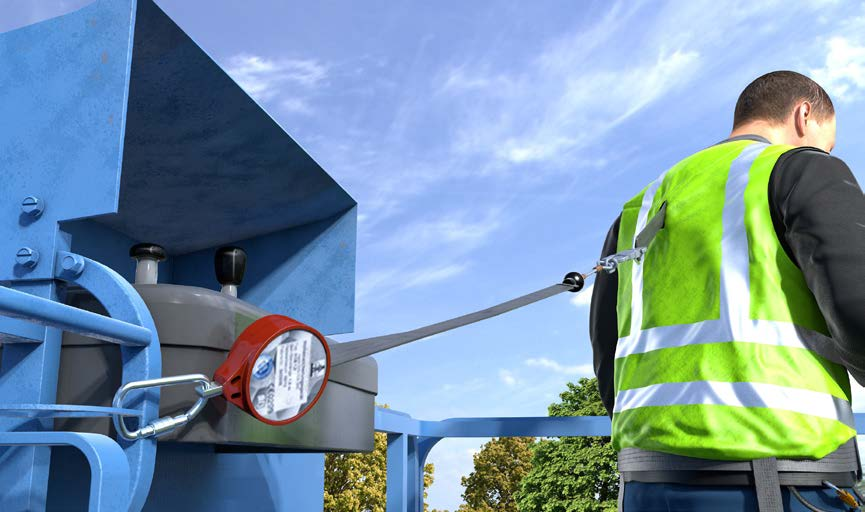
Abb. 43 Einsatz von PSA gegen Absturz in der Hubarbeitsbühne mit zugelassenem Anschlagpunkt
Organisieren Sie das Rettungskonzept.
Technik
Stellen Sie Ihren Beschäftigten geeignete und geprüfte Hubarbeitsbühnen zur Verfügung.
Setzen Sie nur geeignete, unterwiesene, befähigte und schriftlich beauftragte Beschäftigte für das Bedienen ein. Zur Beurteilung der Befähigung kann ein Schulungsnachweis hilfreich sein.
Organisieren Sie eine gerätebezogene Einweisung der Bedienerinnen und Bediener. Unterweisen Sie mindestens einmal jährlich diese anhand einer Betriebsanweisung bzw. der Betriebsanleitung über den sicheren Umgang mit der Hubarbeitsbühne.
Üben Sie mit den Bedienenden regelmäßig den Notablass. Stellen Sie sicher, dass die von den Herstellern der Hubarbeitsbühnen getroffenen Festlegungen zur bestimmungsgemäßen Verwendung eingehalten werden.
Gewährleisten Sie durch regelmäßige oder falls erforderlich anlassbezogene Prüfungen den sicherheitstechnischen Zustand Ihrer Hubarbeitsbühnen und dokumentieren Sie diese.
Sorgen Sie bei gegenseitigen Gefährdungen mit anderen Beschäftigten für eine ausreichende Koordination und treffen Sie geeignete Sicherungsmaßnahmen.

Abb. 44 Diagramm Reichweite/Arbeitshöhe einer Teleskopbühne
Verhalten beim Betrieb
Tragen Sie dafür Sorge, dass vor Arbeitsbeginn eine Sicht- und Funktionsprüfung durchgeführt wird.
Verfahren Sie Hubarbeitsbühnen insbesondere bei hochgefahrenem Arbeitskorb nur auf ebenem Grund. Sichern Sie erforderlichenfalls Bodenöffnungen und Vertiefungen im Fahrbereich.
Beim Verfahren der Hubarbeitsbühne sind durch die bedienende Person ständig alle Bewegungen des Auslegers zu beobachten.
Weisen Sie Ihre Beschäftigten darauf hin, ausreichend Abstand zu Hindernissen wie Freileitungen, Kanten und Böschungen einzuhalten.
| |
|
Weisen Sie Ihre Beschäftigten an, dass sie beim Verlassen der Hubarbeitsbühne stets den Schlüssel abziehen und mitnehmen. |
Beachten Sie bei der Auswahl der Hubarbeitsbühnen die Tragfähigkeit, Arbeitshöhe, Reichweite und den Einsatzort (Innen-/Außeneinsatz).
Vergewissern Sie sich, dass ausreichend befestigte, ebene und tragfähige Untergründe vorhanden sind.
| |
|
Die Tragfähigkeit des Untergrundes kann durch Unterlegplatten verbessert werden. |
Organisation
Sorgen Sie dafür, dass beim Einsatz der Hubarbeitsbühne ausreichende Verkehrssicherungsmaßnahmen getroffen werden. Dies gilt insbesondere für die Sicherung des Gefahrenbereiches unterhalb des Arbeitskorbes (herabfallende Teile) als auch für die Sicherung der Hubarbeitsbühne selbst (Auffahren durch andere Verkehrsbeteiligte).
Aus- und Übersteigen aus dem Arbeitskorb einer Hubarbeitsbühne auf angrenzende Bauteile ist grundsätzlich nicht erlaubt. Die Hubarbeitsbühne ist ein Arbeitsplatz und keine Aufstiegshilfe.
|
3.2.3 Leitern
Leitern werden als Arbeitsplätze und als Zugang zu hochgelegenen Arbeitsplätzen genutzt. Der Einsatz von Leitern ist mit einem hohen Risiko verbunden, auch bereits bei niedriger Höhe. Bevor eine Leiter verwendet werden soll, ist zu ermitteln, ob ein Arbeitsmittel mit einer geringeren Gefährdung benutzt werden kann. Wenn dies nicht möglich ist, ist für den jeweiligen Einsatzbereich eine geeignete Leiter auszuwählen.
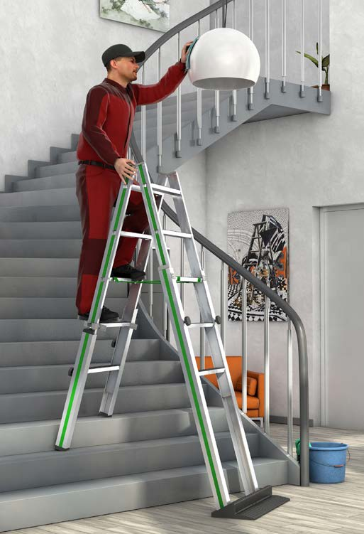
|
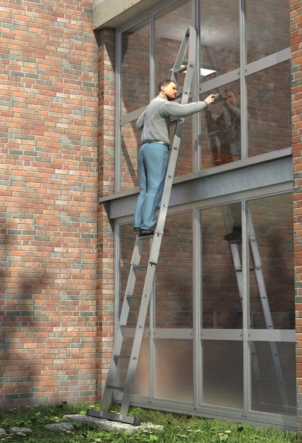
|
Abb. 45 Stehleiter mit Zubehör für Treppen |
Abb. 46 Glasreinigerleiter mit Fußverbreiterung auf tragfähigen Untergrund |
|
Gefährdungen
|
|
Achten Sie bei Auswahl und Verwendung von Leitern insbesondere auf folgende Gefährdungen:
- Abstürzen bzw. Abrutschen von der Leiter
- Absturz durch ungeeignete Leitern
- Umkippen oder Wegrutschen der Leiter durch Fehlverhalten
- Umkippen oder Wegrutschen der Leiter aufgrund eines unebenen, rutschigen oder nicht tragfähigen Untergrundes
- Absturz durch beschädigte Leitern
|
|
Maßnahmen
|
|
Können oben genannte Gefährdungen nicht durch ein Arbeitsmittel mit einer geringeren Gefährdung ausgeschlossen werden sind Maßnahmen zu treffen.
Typische Situationen, in denen andere sicherere Arbeitsmittel wie Gerüste oder Hubarbeitsbühnen nicht verwendet werden können, sind zum Beispiel:
- mangelnde Tragfähigkeit des Untergrundes
- unzureichende Zugänglichkeit
- ungenügende Platzverhältnisse
- fehlende Einrichtungen in oder an Gebäuden, um von Innen z. B. unter Verwendung von PSAgA sicher arbeiten zu können.
Absturz-/Abrutschsicherung
Werden bei der Verwendung von Leitern bestehende Sicherungen gegen Absturz unwirksam, müssen Absturzsicherungsmaßnahmen getroffen werden (z. B. durch PSA gegen Absturz).
Stellen Sie sicher, dass bei Verwendung von Leitern jederzeit ein sicheres Festhalten und Stehen möglich ist. Das sichere Stehen und Festhalten auf der Leiter ist z. B. gegeben, wenn die Beschäftigten mit beiden Füßen auf Sprossen oder Stufen stehen und sich mit einer Hand an der Leiter festhalten können oder ausreichenden Kontakt mit beiden Beinen zur Leiter haben.
Auch ein Transport auf der Leiter darf den sicheren Kontakt zur Leiter nicht einschränken.
| |
|
Zum Transport von Arbeitsmitteln haben sich Werkzeuggürtel bewährt. |
Geeignete Leitern
Wählen Sie für den jeweiligen Einsatz die passende und sicherste Leiter aus (z. B. Podestleiter, Plattformleiter). Tragen Sie dafür Sorge, dass Leitern bestimmungsgemäß verwendet werden, u. a. durch Unterweisung.
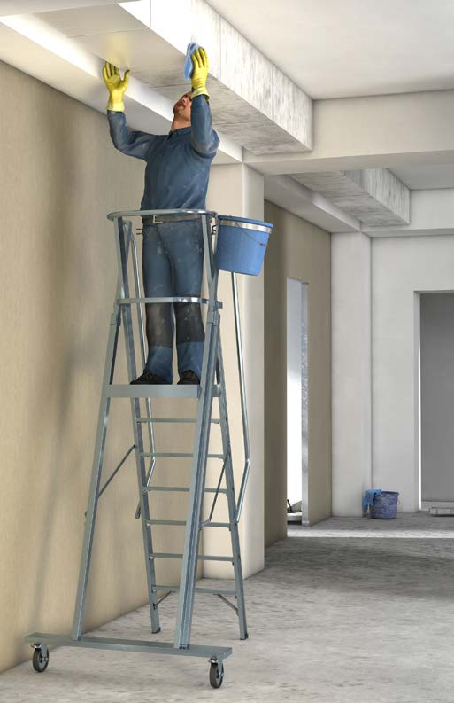
Abb. 47 Podestleiter
Verwenden Sie nach Möglichkeit Leitern mit Fußverbreiterung, rüsten Sie diese falls notwendig nach. Sorgen Sie dafür, dass die Sicherheit gegebenenfalls durch weiteres Leiterzubehör (z. B. Holmverlängerungen, Gummiauflage) erhöht wird.
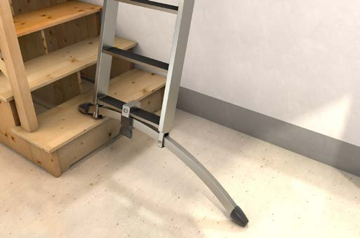
Abb. 48 Anlegeleiter mit Zubehör für Treppen oder Schrägen
Leiter als Arbeitsplatz
Die zulässige Standhöhe auf der Leiter ist in der Regel auf 2,0 m begrenzt, bei zeitweiligen Arbeiten ist auch eine Standhöhe zwischen 2,0 m und 5,0 m möglich, wenn die Arbeiten nach der Gefährdungsbeurteilung sicher durchgeführt werden können.
Aufgrund der Absturzgefährdung und der höheren ergonomischen Belastung dürfen tragbare Leitern als hochgelegener Arbeitsplatz nur verwendet werden, wenn die Beschäftigten mit beiden Füßen auf einer Stufe oder Plattform stehen.
Zur Minimierung der Abrutschgefahr sind Stufenleitern (Auftrittstiefe mindestens 80 mm) und Plattformleitern vorzuziehen. In besonders begründeten Ausnahmefällen, z. B. bei Arbeiten in engen Schächten, können Arbeiten auch auf tragbaren Leitern mit Sprossen ausgeführt werden, wenn die besonderen Gründe in der Gefährdungsbeurteilung dokumentiert sind.
Zeitweilige Arbeiten sind Arbeiten, die einen Zeitraum von zwei Stunden je Arbeitsschicht eines Mitarbeiters bzw. einer Mitarbeiterin nicht überschreiten.
Leiter als Zugang zu hochgelegenen Arbeitsplätzen
Beachten Sie, dass eine Leiter als Zugang zu hochgelegenen Arbeitsplätzen grundsätzlich bis 5,0 m Höhenunterschied eingesetzt werden kann. Für das sichere Übersteigen muss die Leiter mindestens 1,0 m überstehen oder eine Festhaltevorrichtung vorhanden sein.
Unterweisung
Unterweisen Sie Ihre Beschäftigten mindestens einmal jährlich über den sicheren Umgang mit Leitern und dokumentieren Sie dies.
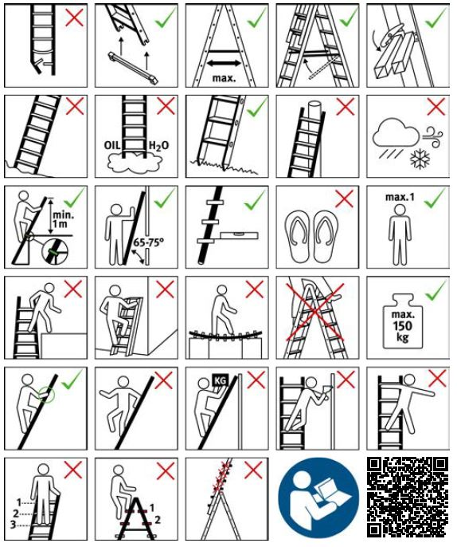
Abb. 49 Hinweise zur Verwendung von Leitern
Sicherung gegen Umkippen oder Wegrutschen
Stellen Sie vor der Verwendung sicher, dass Leitern auf einem tragfähigen und ausreichend großen Untergrund aufgestellt sind und weder umstürzen noch verrutschen können. Achten Sie insbesondere auf die Tragfähigkeit des Anlegepunktes.
| |
|
Kontrollieren Sie die Rutschhemmung der Leiterfüße. Die Standsicherheit erhöht sich durch Fußverbreiterungen. |
Bei Sprossenanlegeleitern sollte der Aufstellwinkel zwischen 65 und 75 Grad betragen. Bei Stufenanlegeleitern soll der Anstellwinkel zwischen 60 und 70 Grad betragen:
Gewährleisten Sie, dass durch Arbeiten auf der Leiter das Kippmoment durch seitliches Hinauslehnen nicht überschritten wird.
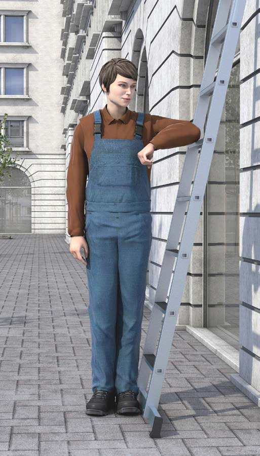
Abb. 50 Anstellwinkel der Glasreinigerleiter
Stehleitern dürfen nicht für das Übersteigen auf hochgelegene Arbeitsplätze oder als Anlegeleitern verwendet werden.
Sorgen Sie dafür, dass bei aufgesetzten Schiebeleitern die obersten vier, bei Anlegeleitern die obersten drei und bei Stehleitern die obersten zwei Stufen nicht betreten werden.
Beim Einsatz von Schiebeleitern, Mehrzweckleitern oder Steckleitern sind die Leiterteile unbeweglich miteinander zu verbinden.
Prüfung
Legen Sie Prüfintervalle fest und sorgen Sie dafür, dass die Leitern entsprechend der festgelegten Fristen durch zur Prüfung befähigte Personen geprüft werden.
Leitern sind vor der Verwendung durch die Benutzerin und den Benutzer auf ordnungsgemäßen Zustand zu überprüfen.
Stellen Sie sicher, dass defekte Leitern nicht verwendet werden. Mängel sind Vorgesetzten zu melden.
Alle festgelegten Maßnahmen sind in einer Gefährdungsbeurteilung zu dokumentieren.
|
3.3 Unterhaltsreinigung
3.3.1 Unterhaltsreinigung – Allgemeine Bereiche
Unterhaltsreinigung steht für sich regelmäßig wiederholende Reinigungsarbeiten, die in allen Arten von Gebäuden vom Verwaltungsgebäude bis zum Flughafen anfallen. Dabei werden Böden, Wände, Decken und sämtliche Einrichtungsgegenstände gereinigt. Gefährdungen können sich zum Beispiel aus den eingesetzten Arbeitsmitteln und Arbeitsstoffen, insbesondere den Reinigungsmittelkonzentraten, aber auch aus der Arbeitsumgebung ergeben.
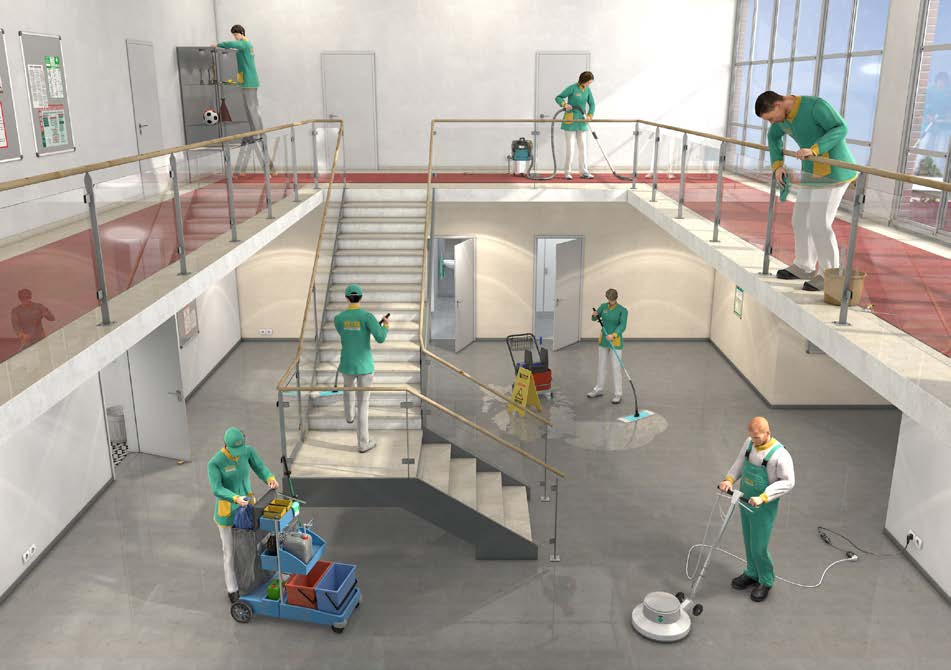
Abb. 51 Standardsituationen bei der Unterhaltsreinigung
|
Gefährdungen
|
|
Bei der Unterhaltsreinigung können insbesondere folgende Gefährdungen auftreten
- Stolpern, Rutschen, Stürzen (Unfallschwerpunkte: glatte/feuchte Böden, unaufgeräumte Örtlichkeiten, Fehltritte auf Treppen)
- Elektrische Gefährdung durch Maschinen und vorhandene Installationen
- Entfettung und (bei Konzentraten) Reizung der Haut durch Umgang mit Reinigungsmitteln
- Feuchtarbeit
|
|
Maßnahmen
|
|
Die erforderlichen Schutzmaßnahmen ergeben sich aus den örtlichen Gegebenheiten und dem eingesetzten Personal.
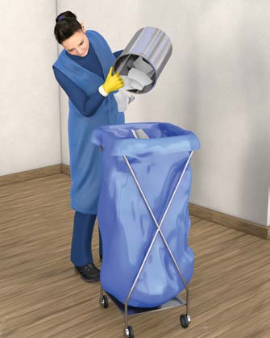
Abb. 52 Müll sammeln
Elektrische Gefährdung
Schutzisolierte Staubsauger können sicher betrieben werden, wenn Schutzadapter ohne Schutzleiterüberwachung (PRCD) verwendet werden oder sichergestellt ist, dass nur geprüfte Steckdosen mit vorgeschaltetem FI-Schutzschalter vorhanden sind. Sorgen Sie dafür, dass die Beschäftigten vor jedem Einsatz elektrischer Betriebsmittel eine Sichtprüfung hinsichtlich beschädigter Isolierungen und Steckdosen vornehmen. Viele Schäden können vermieden werden, wenn die Leitungen am Stecker aus der Steckdose herausgezogen werden.
Stolpern, Rutschen, Stürzen
Sensibilisieren Sie Ihre Beschäftigten in Bezug auf die Unfallschwerpunkte glatte/feuchte Böden, unaufgeräumte Örtlichkeiten, Fehltritte auf Treppen. Sorgen Sie dafür, dass die Beschäftigten geeignetes – mindestens fersenumschließendes – Schuhwerk verwenden. Fußschutz ist bei den Arbeiten in der Regel nicht erforderlich.
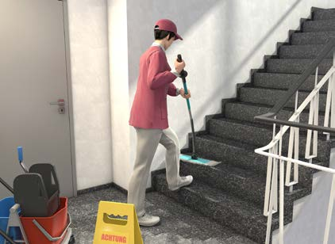
Abb. 53 Treppenreinigung
Umgang mit Reinigungsmitteln und Feuchtarbeit
Bei der Unterhaltsreinigung werden Boden-, Oberflächen-, Glas- und Sanitärreiniger eingesetzt. Unterhaltsreiniger werden in der Regel stark verdünnt eingesetzt. Die Gefährdungen durch verdünnte Anwendungslösungen sind gering. Die Ersatzstoffthematik spielt deshalb eine untergeordnete Rolle. Bei Tätigkeiten mit Konzentraten bestehen für die Beschäftigten Gesundheitsgefahren, die über die Gefährdungen bei der Feuchtarbeit hinausgehen. Beim Reinigen mit verdünnten Produkten sind Schutzbrillen nicht erforderlich. Besteht beim Umgang mit augengefährdenden Konzentraten Spritzgefahr, sollte eine Schutzbrille getragen werden. Bei kurzfristigen Arbeiten mit verdünnten Produkten sind Schutzhandschuhe nicht erforderlich. Bei längerfristigen Tätigkeiten (über zwei Stunden pro Tag) sollten Schutzhandschuhe z. B. aus Naturlatex, Nitril oder Polychloropren (gegebenenfalls mit Baumwollunterziehhandschuhen) getragen werden. Beim Umgang mit Sanitärreinigern sind immer Schutzhandschuhe zu tragen.
Das Tragen von Atemschutz ist bei der Unterhaltsreinigung nicht erforderlich. Nach der Arbeit oder bei längeren Unterbrechungen sollten die Hände mit hautpflegenden Salben eingecremt werden.
Bei Reinigungsarbeiten mit Unterhaltsreinigern ist eine Betriebsanweisung zu erstellen, die im Wesentlichen auf die Hautgefährdung abgestimmt ist.
|
3.3.2 Reinigung von Sport- und Unterhaltungsstätten
Unter Sport- und Veranstaltungsstätten sind Sporthallen und -arenen, Kinos, Theater, Opernhäuser, Mehrzweck- und Messehallen zu verstehen. Durch die unterschiedliche Nutzung und die örtlichen Bedingungen ergeben sich für die Reinigung Tätigkeiten mit Gefährdungen für Ihre Mitarbeiterinnen und Mitarbeiter, die nicht nur aus der eigenen Tätigkeit, sondern besonders aus der Arbeitsumgebung heraus entstehen.
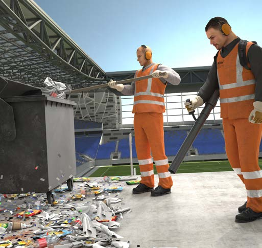
|
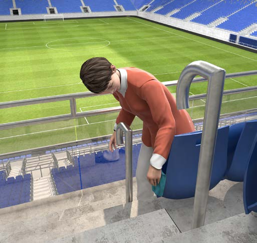
|
Abb. 54 Müll sammeln mit Gebläse |
Abb. 55 Stadien-Reinigung |
|
Gefährdungen
|
|
Hierbei können insbesondere folgende Gefährdungen auftreten:
- Rutschen, Stolpern, Stürzen durch
- herumliegende Teile
- Auf- und Abbau
- Flüssigkeiten auf dem Boden nach Veranstaltungen
- wechselnde Oberflächen
- treppenartige Flächen ohne Geländer mit ungleichmäßigen Höhenunterschieden
- Zeitdruck, wenn die Veranstaltungsorte kurzfristig für nachfolgende Veranstaltungen genutzt werden
- Verletzungen durch Papier, Scherben oder spitze Gegenstände
- Belastung durch schweres Heben und Tragen von Sportgeräten oder Stühlen
- Gefahr des Anstoßens an Konstruktionsteile der Bühnenbauer
- Gefährdung durch Klima, wenn die Beschäftigten Witterungseinflüssen ausgesetzt sind
|
|
Maßnahmen
|
|
Die erforderlichen Schutzmaßnahmen sind unter Berücksichtigung der örtlichen Gegebenheiten und des eingesetzten Personals zu wählen.
- Sorgen Sie dafür, dass nur Beschäftigte mit besonderer Unterweisung eingesetzt werden.
- Stellen Sie geeignetes Schuhwerk entsprechend der Untergründe und Rutschgefahr zur Verfügung.
- Setzen Sie, wo möglich und sinnvoll, akkubetriebene Geräte ein.
- Schnittfeste Handschuhe sind bei einigen Arbeiten wie Müll einsammeln erforderlich.
- Setzen Sie ständig anwesende Aufsichtführende ein.
- Stimmen Sie Ihre Tätigkeiten mit denen der anderen Firmen ab.
- Planen Sie Ihre Arbeit sorgfältig und stimmen Sie sich ggfs. mit den Veranstalterinnen und Veranstaltern ab.
- Schwere Teile sollten nur zu zweit, ggfs. mit Hilfsmitteln, getragen werden.
- Stellen Sie PSA gegen Witterungseinflüsse (Kälte, Nässe, UV-Strahlung) und zur Vermeidung von Kopfverletzungen zur Verfügung.
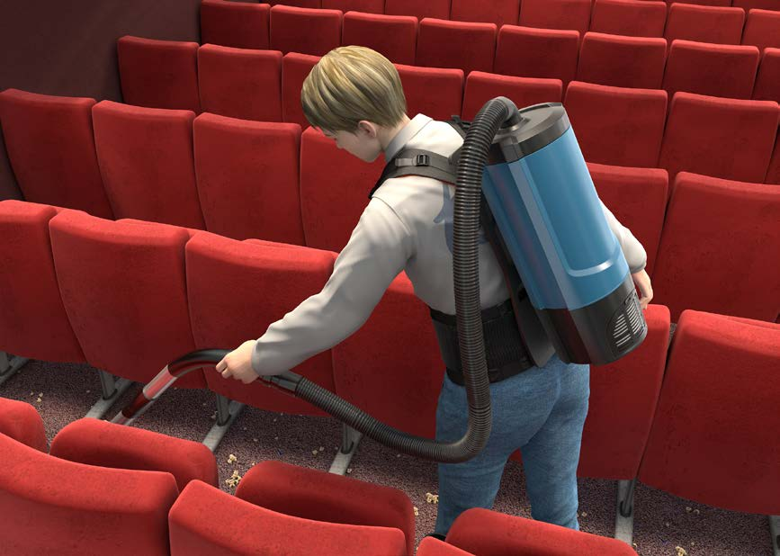
Abb. 56 Akkusauger bei Kinoreinigung
|
3.3.3 Schwimmbadreinigung
Die Schwimmbadreinigung umfasst die Reinigung von Verkehrsflächen, Umkleide-, Dusch- und Sanitärbereichen, Wellnessanlagen und Schwimmbecken im Innen- und Außenbereich. Gefährdungen ergeben sich insbesondere durch die feuchte Umgebung (erhöhte Rutschgefahr), eingesetzte Arbeitsmittel und Arbeitsstoffe.
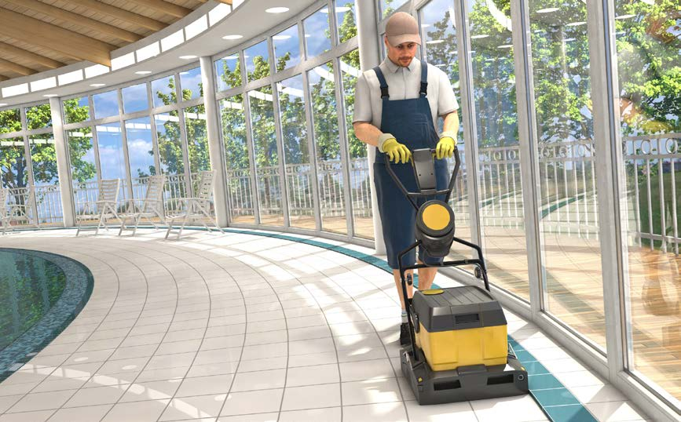
Abb. 57 Maschineneinsatz mit Akkugerät
|
Gefährdungen
|
|
Bei der Schwimmbadreinigung können insbesondere folgende Gefährdungen auftreten:
- Stolpern, Rutschen, Stürzen (Unfallschwerpunkte: glatte, feuchte, geneigte Böden)
- Elektrische Gefährdung: Stromschlag durch Maschinen und vorhandene Installationen
- Arbeitsumgebung: Wärme und hohe Luftfeuchte
- Chemische Gefährdungen durch saure und alkalische Reinigungsmittel sowie Flächendesinfektionsreiniger: Reizungen oder Verätzungen der Haut und der Augen; bei Sprüh- oder Spritzverfahren durch Aerosolbildung auch Reizungen der Atemwege
- Gefahr durch Chlorgas bei Kontakt von sauren und hypochlorithaltigen Reinigungsmitteln.
- Gefahr des Ertrinkens durch Sturz ins Becken
|
|
Maßnahmen
|
|
Die erforderlichen Schutzmaßnahmen ergeben sich aus den örtlichen Gegebenheiten und dem eingesetzten Personal.
Stolpern, Rutschen und Stürzen
Sensibilisieren Sie Ihre Beschäftigten in Bezug auf die Unfallschwerpunkte glatte, feuchte und geneigte Bodenflächen.
Sorgen Sie dafür, dass die Beschäftigten geeignetes, fersenumschließendes und rutschhemmendes Schuhwerk verwenden.
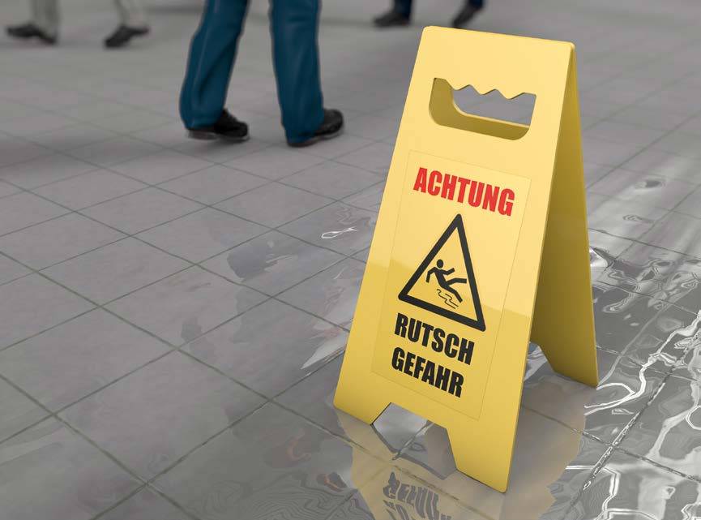
Abb. 58 Rutschgefahr auch für Gäste
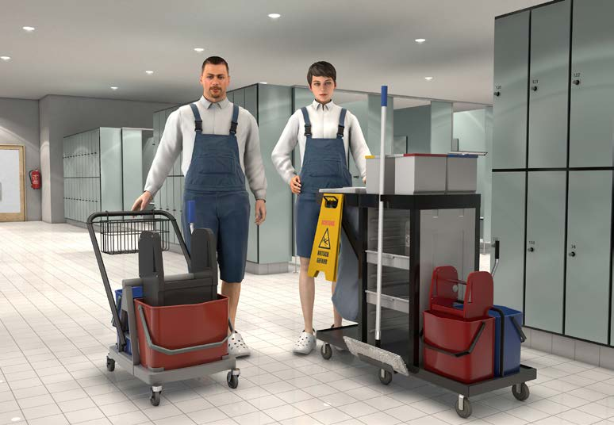
Abb. 59 Systemwagen im Schwimmbad
Elektrische Gefährdung
Beim Einsatz von elektrischen Geräten im Nassbereich sind mindestens spritzwassergeschützte Geräte der Schutzart IP X4 zu verwenden. Stellen Sie sicher, dass nur geprüfte Steckdosen mit vorgeschaltetem FI- Schutzschalter vorhanden sind oder Schutzadapter mit Schutzleiterüberwachung (PRCD-S) verwendet werden. Sorgen Sie dafür, dass die Beschäftigten vor jedem Einsatz elektrischer Betriebsmittel eine Sichtprüfung hinsichtlich beschädigter Isolierungen und Steckdosen vornehmen.
Chemische Gefährdungen
Besteht Spritzgefahr, z. B. beim Ansetzen der Reinigungsflotte oder bei Arbeiten über Kopf, ist als Augenschutz eine Korbbrille zu tragen.
Als Handschutz eignen sich Chemikalienschutzhandschuhe, z. B. aus Naturlatex oder Nitril. Als Körperschutz sind geschlossene, langärmelige Arbeitskleidung sowie Gummistiefel oder flüssigkeitsdichte Schuhe erforderlich.
Bei der Anwendung im Sprüh- oder Spritzverfahren sind Gummistiefel, ein Chemikalienschutzanzug Typ 4, Atemschutz mit Partikelfilter P2, eine Korbbrille oder ein Gesichtsschutzschirm sowie Chemikalienschutzhandschuhe erforderlich.
Aufgrund der hohen Gefährdung sind bei Augen- oder Hautkontakt sofortige Erste-Hilfe-Maßnahmen erforderlich. Nach Augenkontakt ist 10 Minuten unter fließendem Wasser bei gespreizten Lidern zu spülen. Es ist immer eine Augenarztpraxis aufzusuchen. Nach Hautkontakt sind betroffene Stellen mindestens 15 Minuten unter fließendes kaltes Wasser zu halten.
Saure Reinigungsmittel dürfen nicht in Kontakt mit hypochlorithaltigen Reinigungsmitteln kommen, da sonst giftiges Chlorgas entsteht.
Arbeitsumgebung
Bei körperlicher Belastung infolge hoher Luftfeuchtigkeit und Temperatur sollte auf das Tragen leichter Kleidung hingewirkt werden.
Gefahr des Ertrinkens
Mitarbeiterinnen und Mitarbeiter, die in der Nähe der Becken arbeiten, sollten schwimmen können bzw. eine vollautomatische Rettungsweste – insbesondere bei Alleinarbeit – tragen. Eine zweite Person sollte in der Nähe sein, um eine mögliche Rettung der verunfallten Person durchführen zu können.
|
3.4 Fassadenreinigung
Die Fassade ist oft ein besonders gestalteter und repräsentativer Teil eines Gebäudes. Zum dauerhaften Erhalt des Erscheinungsbildes ist eine regelmäßige Reinigung und Behandlung der Oberfläche erforderlich. Aufgrund der unterschiedlichen Fassadenformen und -arten wie beispielsweise Stein, Glas oder Metall, moderne oder historische Fassaden, sind an die Reinigung besondere Anforderungen gestellt. Das Arbeiten in Höhen sowie der Umgang mit den eingesetzten Arbeits- und Reinigungsmitteln stellen spezifische Gefährdungen dar.
|
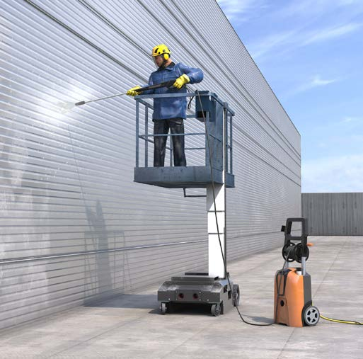
|
Abb. 60 Graffitientfernung |
Abb. 61 Hochdruckreinigen |
|
Gefährdungen
|
|
Bei der Fassadenreinigung können insbesondere folgende Gefährdungen auftreten:
- Absturz von hochgelegenen Arbeitsplätzen
- Gefährdungen aus dem öffentlichen und betrieblichen Fahrzeugverkehr
- Stolpern, Rutschen, Stürzen (z. B. durch Bodenunebenheiten, eingesetzte Arbeitsmittel, unaufgeräumte Arbeitsplätze)
- Elektrische Gefährdungen durch Maschineneinsatz
- Mechanische Gefährdungen durch Maschinen und Gebäudeteile
- Verätzung, Reizung der Augen, Haut und Atemwege und Entfettung der Haut durch Umgang mit Reinigungsmitteln. Lösemittel können inhalativ zu inneren Schädigungen führen
- Feuchtarbeit beim Abwaschen/Abstrahlen
- Klima (Kälte, Hitze, natürliche UV-Strahlung)
- Gefährdungen auch aus der Witterung (Wind)
- Lärm
- körperliche Belastung durch Bedienen/Transport von Maschinen und Geräten sowie Zwangshaltungen
|
|
Maßnahmen
|
|
Die erforderlichen geeigneten Schutzmaßnahmen ergeben sich aus den örtlichen Voraussetzungen und dem eingesetzten Personal.
Absturz
Hochgelegene Arbeitsplätze müssen so beschaffen sein, dass sie jederzeit ein sicheres Arbeiten ermöglichen. Neben einem ausreichend hoch umwehrten Standplatz muss auch die Aufstellfläche genügend Tragfähigkeit aufweisen. Setzen Sie nur geprüfte Arbeitsmittel ein. Beachten Sie insbesondere:
- bei Arbeitsgerüsten die erforderliche Prüfung durch eine zur Prüfung befähigte Person
- bei Hubarbeitsbühnen die schriftliche Beauftragung fachkundiger Bediener/Bedienerinnen
- bei Fahrgerüsten die erforderliche Prüfung durch eine befähigte Person
- bei Fassadenbefahranlagen nur Einsatz eingewiesener Personen
- bei handbetriebenen Arbeitssitzen ausschließlich Höhenarbeiterinnen und -arbeiter einsetzen
- bei Leitereinsätzen die Nutzungsbeschränkungen einhalten
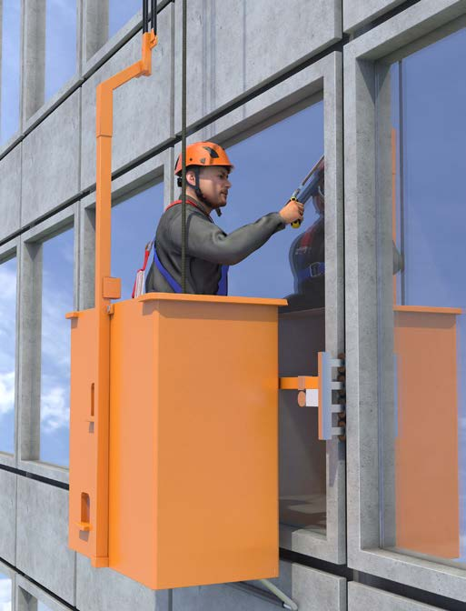
Abb. 62 Fassadenreinigung mit Fassadenbefahranlage
Sorgen Sie dafür, dass der Bereich unterhalb von hochgelegenen Arbeitsplätzen gesichert ist.
Verkehrsgefährdungen
Holen Sie vor dem Einsatz von Arbeitsmitteln, wie Hubarbeitsbühnen oder Gerüsten, in öffentlichen Verkehrsbereichen eine behördliche Genehmigung ein. Stimmen Sie Sicherungsmaßnahmen – auch für den innerbetrieblichen Verkehr – mit den Auftraggebenden ab.
| |
|
Statten Sie Ihre Mitarbeiterinnen und Mitarbeiter mit Warnwesten aus. |
Stolpern, Rutschen, Stürzen
Bei Fassadenarbeiten vom Boden aus bestehen SRS-Gefährdungen z. B. durch örtliche Bodengegebenheiten oder eingesetzte Arbeitsmittel (Schläuche, Zuleitungen). Sensibilisieren Sie Ihre Beschäftigten hinsichtlich der Vermeidung dieser Gefährdungen. Bei Fassadenreinigungsarbeiten sind grundsätzlich Sicherheitsschuhe (S3) oder Stiefel (S5) zu tragen.
Elektrische Gefährdungen
Der Einsatz elektrischer Betriebsmittel erfordert einen besonderen Anschlusspunkt. Vor dem Anschlusspunkt muss eine Schutzmaßnahme gegen Fehlerstrom, z. B. FI-Schutzschalter oder PRCD-S, vorhanden sein.
Stellen Sie sicher, dass nur geprüfte elektrische Betriebsmittel zum Einsatz kommen.
Mechanische Gefährdung
Sorgen Sie beim Aufstellen und Betrieb der Hubarbeitsbühnen dafür, dass Quetschen und Anstoßen vermieden werden. Bei Windbelastung nach Bedienungsanleitung evtl. Arbeiten einstellen.
Zum Schutz vor wegfliegenden Teilen (z. B. Abplatzungen) ist geeignete Schutzausrüstung zur Verfügung zu stellen.
Umgang mit Reinigungsmitteln und Feuchtarbeit
Bei der Fassadenreinigung werden lösemittelhaltige Produkte (Eloxalreiniger) sowie saure und alkalische Reiniger (Steinreiniger) eingesetzt.
Strahlarbeiten mit festen Strahlmitteln, Tätigkeiten mit Abbeizern und Graffiti-Entfernern sowie mit flusssäurehaltigen Produkten stellen eine erhöhte Gefährdung dar. Sie finden die tätigkeitsbezogenen Schutzmaßnahmen beispielsweise in Wingis.
Bei Fassadenreinigungsarbeiten sind Chemikalienschutzhandschuhe aus Polychloropren oder Nitrilkautschuk zu tragen. Bei Tätigkeiten mit sauren oder alkalischen Reinigern sind Schutzbrillen/Helmvisiere erforderlich. Werden die Reinigungsmittel im Spritzverfahren aufgetragen, ist in der Regel Atemschutz erforderlich. Bei Produkten ohne flüchtige Inhaltsstoffe ist ein P2-Filter ausreichend.
Bei lösemittelhaltigen Produkten sind Kombinationsfilter A1-P2, bei Produkten mit flüchtigen Säuren (Ameisen- oder Salzsäure) E1-P2, bei Produkten mit flüchtigen Alkalien (Ammoniak, Aminoethanol) K1-P2 erforderlich. Als Körperschutz sind Chemikalienschutzanzüge (Typ 4, spraydicht) und Kunststoffstiefel erforderlich.
Klima
Sorgen Sie bei Hitze für ausreichende Flüssigkeit sowie bei Sonneneinwirkung für UV-Schutz durch Kleidung und Sonnenschutzmittel. Für weitere Witterungseinflüsse stellen Sie Wetterschutzkleidung zur Verfügung.
Lärm
Setzen Sie möglichst lärmgeminderte Geräte ein und wählen Sie den Standort der Geräte möglichst weit entfernt vom Arbeitsplatz. Außerdem ist Gehörschutz zur Verfügung zu stellen.
Körperliche Belastung
Wirken Sie andauernden Belastungen durch Wechsel der Abläufe entgegen.
|
3.5 Glasreinigung
Die Glasreinigung beinhaltet sowohl die Reinigung von einzelnen Fenstern als auch von ganzen Glasfassaden und -dächern. Man unterscheidet zwischen der Reinigung der Glasscheiben, der Rahmen und der Falze. Gefährdungen können sich z. B. aus den Arbeitshöhen, den Arbeitsmaterialien und den eingesetzten Reinigungsmitteln ergeben.
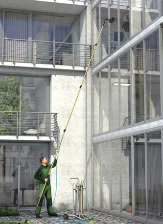
|
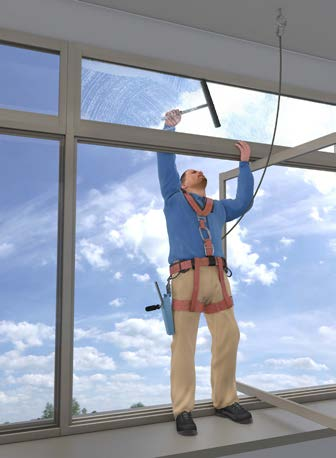
|
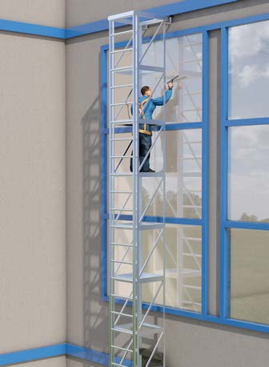
|
Abb. 63 Reinigen mit entmineralisiertem Wasser |
Abb. 64 Zulässiger Standplatz Fensterbank |
Abb. 65 Befahranlage |
|
Gefährdungen
|
|
Bei der Glasreinigung können insbesondere folgende Gefährdungen auftreten:
- Absturz von hochgelegenen Arbeitsplätzen wie Leitern, Dächer, Fensterbänke und Fassadenbefahranlagen
- Durchsturz durch nicht begehbare Bauteile wie Glasdächer, Lichtplatten, Glaszwischendecken
- Verletzungen durch Klingen in Glasschabern
- Verletzungen durch herabfallende Arbeitsgeräte
- Körperliche Belastung bei Arbeiten mit stangengeführten Glasreinigungssystemen
- Reizung oder Entfettung der Haut durch Tätigkeiten mit Reinigungsmitteln
- Gefährdung durch betrieblichen oder öffentlichen Fahrzeugverkehr
- Klima (Kälte/Hitze)
|
|
Maßnahmen
|
|
Absturz
Wählen Sie ein Arbeitsverfahren, bei dem keine Absturzgefahr besteht (Teleskopstangen, stangengeführtes Reinigungssystem).
Sorgen Sie dafür, dass Arbeiten auf hochgelegenen Arbeitsplätzen sicher ausgeführt werden. Fensterbänke dürfen nur betreten werden, wenn sie tragfähig und mindestens 25 cm breit sind. Absturzsicherungen (Seitenschutz/Umwehrung) können festinstalliert oder mobil sein. Sie müssen zudem grundsätzlich mindestens 1,00 m hoch sein. Diese Forderung ist auch erfüllt, wenn Seitenschutz angebracht ist, der dem örtlich geltenden Baurecht entspricht.
Die Höhe der Umwehrungen darf bei Brüstungen bis auf 0,80 m verringert werden, wenn die Tiefe mindestens 0,20 m beträgt.
Setzen Sie nur geprüfte Arbeitsmittel ein. Besonders geeignet sind Hubarbeitsbühnen oder Fahrgerüste. Achten Sie auf den sicheren Aufbau.
Beachten Sie insbesondere:
- bei Hubarbeitsbühnen die schriftliche Beauftragung der fachkundigen Bediener bzw. Bedienerinnen,
- bei Fahrgerüsten die erforderliche Prüfung durch eine zur Prüfung befähigte Person,
- bei Fassadenbefahranlagen und Hubarbeitsbühnen nur eingewiesene Personen einsetzen,
- bei handbetriebenen Arbeitssitzen ausschließlich Höhenarbeiterinnen und -arbeiter einsetzen,
- bei Leitereinsätzen die Nutzungsbeschränkungen einhalten
Sorgen Sie dafür, dass der Bereich unterhalb von hochgelegenen Arbeitsplätzen gesichert ist. Wenn Absturzsicherungen (Umwehrung) aus arbeitstechnischen Gründen nicht möglich sind, soll Persönliche Schutzausrüstung gegen Absturz (PSAgA) verwendet werden. Achten Sie darauf, dass nur geeignete und sachkundig geprüfte (mindestens einmal jährlich) PSAgA zum Einsatz kommt. Sie darf nur an tragfähigen Bauteilen (6 KN bei einer Person) oder geeigneten Anschlageinrichtungen (nach DIN EN 795) befestigt werden.
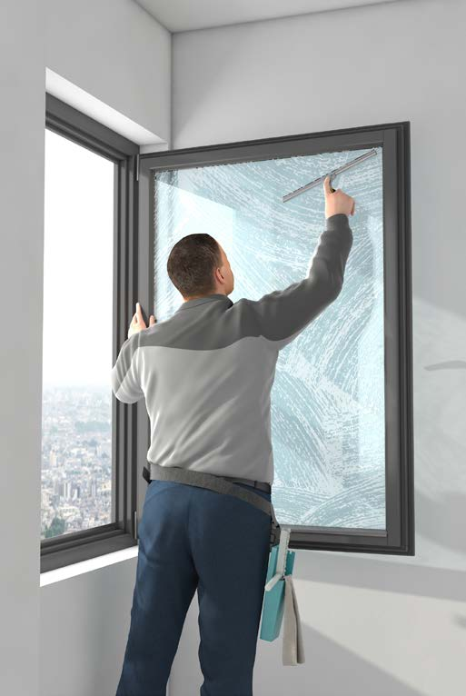
Abb. 66 Reinigung vom Boden aus ohne Absturzgefahr
Sorgen Sie dafür, dass die Befestigungen für die PSAgA festgelegt sind und der Anseilschutz benutzt wird. Die Verbindungsmittel (Seile, Bänder) dürfen nicht über scharfe Kanten beansprucht werden. Führen Sie praktische Übungen zur bestimmungsgemäßen Verwendung der PSAgA und zur Rettung durch.
An Arbeitsplätzen und Verkehrswegen auf Dächern mit weniger als 22,5° Neigung kann auf Absturzsicherung verzichtet werden, wenn in mindestens 2 m Abstand von der Absturzkante eine Absperrung, z. B. mit einer Kette, angebracht ist. Glasdächer dürfen nur betreten werden, wenn diese nachweislich betretbar sind. An Öffnungen, Lichtkuppeln und Lichtbändern kann auf Absturzsicherungen verzichtet werden, wenn diese mehr als 50 cm aus der Fläche herausragen.
Für nicht betretbare Bauteile wie Lichtplatten, Staubdecken und Verglasungen müssen tragfähige Arbeitsplätze und Verkehrswege mit mindestens 50 cm Breite und Absturzsicherungen nach innen vorhanden sein.
Mechanische Gefährdung
Sorgen Sie beim Aufstellen und Betrieb der Hubarbeitsbühnen dafür, dass Quetschungen und Anstoßen vermieden werden.
Ersetzen Sie Glashobel möglichst durch Sicherheitsschaber.
Abb. 67 Entfernen eines Aufklebers mit Sicherheitsschaber
Körperliche Belastung
Wirken Sie andauernden Belastungen wie bei Arbeiten mit stangengeführten Glasreinigungssystemen durch Wechsel der Abläufe entgegen.
Prüfen Sie den Einsatz ergonomischer Hilfen wie Tragegestelle und Prismenbrillen.
Umgang mit Reinigungsmitteln und Feuchtarbeit
Glasreiniger werden in der Regel stark verdünnt eingesetzt. Die Gefährdung durch Hautkontakt ist gering. Sprühprodukte (Pumpsprays), die nicht großflächig verwendet werden, kommen konzentriert zur Anwendung. Die unverdünnten Produkte können die Augen und die Haut reizen.
Bei Tätigkeiten mit unverdünnten Produkten und bei längerfristigen Tätigkeiten (über zwei Stunden pro Tag) mit verdünnten Reinigungsflotten, sollten Schutzhandschuhe (z. B. aus Naturlatex, Nitril oder Polychloropren) getragen werden. Wenn Hautkontakt durch den Einsatz von Werkzeugen wie Fensterwischer oder Einwascher verhindert wird, sind Schutzhandschuhe nicht erforderlich.
Das Tragen von Atemschutz ist bei der Glasreinigung – auch bei Pumpsprays – nicht erforderlich.
Verkehrsgefährdung
Holen Sie vor dem Einsatz von Arbeitsmitteln, wie Hubarbeitsbühnen oder Fahrgerüsten, in öffentlichen Verkehrsbereichen eine behördliche Genehmigung ein.
Stimmen Sie Sicherungsmaßnahmen – auch für den innerbetrieblichen Verkehr – mit dem oder der Auftraggebenden ab.
Stellen Sie sicher, dass Ihre Beschäftigten für Verkehrsbeteiligte immer gut sichtbar sind (Warnwesten).
Klima
Sorgen Sie bei Hitze für ausreichende Flüssigkeit; bei Sonneneinwirkung für UV-Schutz durch Kleidung und Sonnenschutzmittel.
|
3.6 Baureinigung
Unter Baureinigung versteht man Reinigungstätigkeiten sowohl während der Bauzeit (Bauzwischenreinigung) als auch zum Ende der Bauzeit (Bauschlussreinigung). Die Bauzwischenreinigung umfasst das Entfernen von grober Verschmutzung bis hin zur Bauschuttbeseitigung im laufenden Baubetrieb. Durch die Situation "Baustelle" und die Gewerke übergreifenden Tätigkeiten sind zur Gewährleistung des Arbeits- und Gesundheitsschutzes der Beschäftigten besondere Anforderungen gestellt. Bauschlussreinigung ist die Reinigung nach Abschluss der Bauarbeiten zur Übergabe des Objektes an Nutzende.
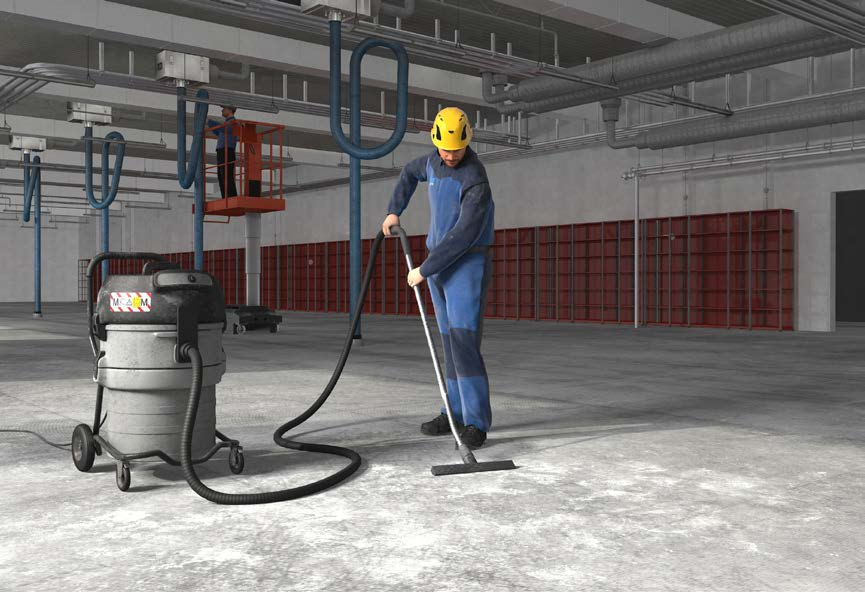
Abb. 68 Bauentstauber
|
Gefährdungen
|
|
Bei der Baureinigung können insbesondere folgende Gefährdungen auftreten:
- Stolpern, Rutschen, Stürzen (z. B. durch Bodenunebenheiten, Baumaterialien, Bodenöffnungen und unaufgeräumte Verkehrswege)
- Elektrische Gefährdung durch Maschineneinsatz oder vorhandene elektrische Betriebsmittel
- Verätzung, Reizung und Entfettung der Haut durch Umgang mit Reinigungsmitteln
- Gefährdung durch Staub
- Mechanische Gefährdung (z. B. stoßen, stechen, schneiden)
- Absturz von hochgelegenen Arbeitsplätzen
- Lärm
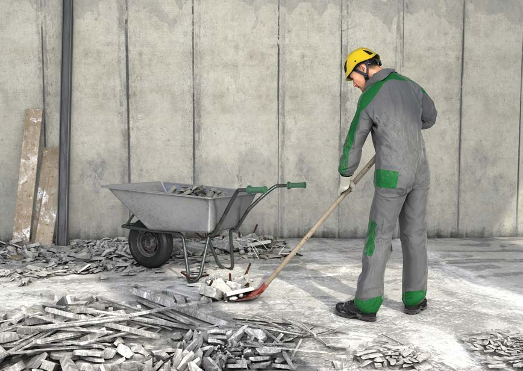
Abb. 69 Grobschmutz mit Schaufel aufnehmen
|
|
Maßnahmen
|
|
Die erforderlichen geeigneten Schutzmaßnahmen ergeben sich aus den örtlichen Voraussetzungen und dem eingesetzten Personal.
Stolpern, Rutschen, Stürzen
Sensibilisieren Sie Ihre Beschäftigten hinsichtlich der auf der Baustelle erhöhten SRS- Gefährdung. Achten Sie insbesondere auf die Sicherung kleinerer Bodenöffnungen.
Arbeitsplätze und Verkehrswege müssen ausreichend beleuchtet sein.
Bei der Baureinigung sind grundsätzlich Sicherheitsschuhe (S3) zu tragen.
Elektrische Gefährdung
Der Einsatz von elektrischen Betriebsmitteln erfordert einen besonderen Anschlusspunkt, der durch eine vorgeschaltete Fehlerstrom-Schutzeinrichtung (mit 30 mA Bemessungsdifferenzstrom) geschützt ist.
Stellen Sie sicher, dass nur geprüfte elektrische Betriebsmittel zum Einsatz kommen. Nutzen Sie keine fremden ortsveränderlichen elektrischen Betriebsmittel.
Umgang mit Reinigungsmitteln
Bei der Baureinigung werden z. B. Boden-, Oberflächen-, Glas- und Sanitärreiniger eingesetzt. Grobe Verschmutzungen erfordern häufig den Einsatz von Konzentraten, die für Ihre Beschäftigten besondere Gesundheitsgefahren darstellen.
Dabei müssen Haut und Augen Ihres Personals geschützt werden. Sorgen Sie dafür, dass Schutzbrillen und geeignete Schutzhandschuhe, z. B. aus Naturlatex, Nitril oder Polychloropren (gegebenenfalls mit Baumwollunterziehhandschuhen) getragen werden. Das Tragen von Atemschutz ist in der Regel nicht erforderlich.
Nach der Arbeit oder bei längeren Unterbrechungen sollten die Hände mit hautpflegenden Salben eingecremt werden.
Erstellen Sie Betriebsanweisungen für den Umgang mit den jeweiligen Konzentraten und unterweisen Sie Ihre Beschäftigten.
Gefährdung durch Staub
Vermeiden Sie durch die Auswahl geeigneter Arbeitsmittel oder -verfahren, wie den Einsatz von Industriestaubsaugern der Staubklasse M oder die Verwendung von Bindemitteln, die Entstehung von gesundheitsschädlichen Stäuben am Arbeitsplatz.
Mechanische Gefährdung
Zum Schutz vor spitzen und scharfkantigen Gegenständen bei Entsorgungsarbeiten ist geeigneter Handschutz zur Verfügung zu stellen, der einer erhöhten mechanischen Einwirkung standhält.
Hier können robuste Lederhandschuhe eingesetzt werden.
Gegen herabfallende Gegenstände und Anstoßgefährdung sind Industrieschutzhelme zu tragen.
Gegen Eintritt in spitze Gegenstände oder herabfallende Teile schützen Sicherheitsschuhe der Kategorie S3.
Absturz
Arbeitsplätze und Verkehrswege müssen so beschaffen sein, dass sie jederzeit ein sicheres Arbeiten ermöglichen. Besteht die Gefahr des Absturzes müssen tragfähige Geländer oder Abdeckungen vorhanden sein.
Beim Einsatz oder der Nutzung von Gerüsten beachten Sie die erforderliche Prüfung durch eine zur Prüfung befähigte Person.
Lärm
Bei lärmintensiven Tätigkeiten in der Baustellenumgebung ist dem Personal geeigneter Gehörschutz zur Verfügung zu stellen.
|
3.7 Grundreinigung
Zusätzlich zur Unterhaltsreinigung werden zum Werterhalt des Gebäudes bei der Grundreinigung in größeren Zeitabständen hartnäckige Verschmutzungen, abgenutzte Pflegefilme oder andere Rückstände entfernt, die das Aussehen der Oberfläche beeinträchtigen. Hierbei werden Maschinen, wie Einscheibenmaschinen oder Sprühextraktionsgeräte, verwendet und es kommen spezielle Reinigungsprodukte zum Einsatz. Daher ergeben sich besondere Anforderungen an die Organisation des Arbeitsschutzes, bei der Planung und Ausführung der Tätigkeiten.
Abb. 71 Hinweis Rutschgefahr
|
Gefährdungen
|
|
Bei der Grundreinigung können insbesondere folgende Gefährdungen auftreten
- Rutschgefahr durch Arbeit in der Reinigungsflotte
- Einsatz von Reinigungsmitteln mit erhöhter Gefährdung (kennzeichnungspflichtige Produkte)
- Feuchtarbeit
- Absturz von Leitern
- Elektrische Gefährdung durch den Einsatz von Maschinen ohne Schutzisolierung
- Heben und Tragen schwerer Einrichtungsgegenstände oder Reinigungsmaschinen (z. B. Einscheibenmaschinen vom Fahrzeug zum Einsatzort)
- mechanische Gefährdung beim Treibtellerwechsel der Einscheibenmaschinen
|
|
Maßnahmen
|
|
Die erforderlichen Schutzmaßnahmen ergeben sich aus den örtlichen Gegebenheiten, den Arbeitsverfahren und dem eingesetzten Personal.
Stolpern, Rutschen, Stürzen
Sensibilisieren Sie Ihre Beschäftigten in Bezug auf Unfallschwerpunkte, wie glatte/feuchte Böden, unaufgeräumte Örtlichkeiten oder Fehltritte auf Treppen.
Sorgen Sie dafür, dass die Beschäftigten geeignetes – mindestens fersenumschließendes- feuchtigkeitsdichtes Schuhwerk mit Rutschhemmung verwenden. Schuhe/Stiefel der Kategorie S3/S5 erfüllen diese Anforderungen.
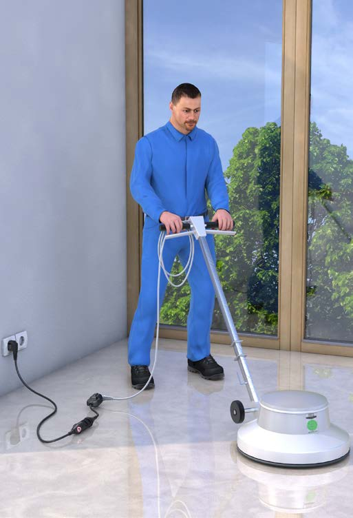
Abb. 70 Einscheibenmaschine mit PRCD-S
Umgang mit Reinigungsmitteln und Feuchtarbeit
Ermitteln Sie, ob es sich bei den auszuführenden Tätigkeiten um Feuchtarbeit handelt und stimmen Sie gegebenenfalls die Maßnahmen darauf ab.
Grundreiniger sind Reinigungsmittel, die Reizungen oder Verätzungen der Haut und schwere Augenschäden verursachen können. Besteht Spritzgefahr, z. B. beim Ansetzen der verdünnten Reinigungsflotte, ist als Augenschutz eine Korbbrille zu tragen. Als Handschutz eignen sich Chemikalienschutzhandschuhe aus Naturlatex, Nitril- oder Butylkautschuk. Einmal-Chemikalienschutzhandschuhe sind ungeeignet.
Als Körperschutz sind geschlossene, langärmelige Arbeitskleidung sowie Gummistiefel oder flüssigkeitsdichte Schuhe erforderlich.
Werden Grundreiniger eingesetzt, die die Stoffe 2-Butoxyethanol oder Limonen enthalten (GISCODE: GG60, GG90), müssen die Arbeiten bei geöffneten Fenstern und Türen durchgeführt werden. Trotzdem kann der Arbeitsplatzgrenzwert überschritten und zusätzlich Atemschutz (z. B. Halbmaske mit Gasfilter A1) erforderlich werden.
Grundreiniger ohne 2-Butoxyethanol oder Limonen sind vorzuziehen. Bei diesen sind auch Überschreitungen von Arbeitsplatzgrenzwerten nicht zu erwarten. Dennoch sollte der Arbeitsbereich auch beim Einsatz dieser Produkte nach Möglichkeit gut gelüftet werden.
Beim Einsatz von Grundreinigungsmitteln sind aufgrund der hohen Gefährdung bei Augen- oder Hautkontakt sofortige Erste-Hilfe-Maßnahmen erforderlich. Nach Augenkontakt ist 10 Minuten unter fließendem Wasser bei gespreizten Lidern zu spülen. Es ist immer eine augenärztliche Sprechstunde aufzusuchen. Nach Hautkontakt sind betroffene Stellen mindestens 15 Minuten unter fließendes kaltes Wasser zu halten.
Saure Grundreinigungsmittel dürfen nicht in Kontakt mit hypochlorithaltigen Reinigungsmitteln kommen, da sonst giftiges Chlorgas entsteht.
Absturz von Leitern
Vermeiden Sie möglichst den Einsatz von Leitern, indem Sie z. B. teleskopierbare Arbeitsmittel einsetzen. Ist dies nicht möglich, prüfen Sie den Einsatz von Arbeitsbühnen.
Lässt sich der Leitereinsatz nicht umgehen, wählen Sie die sicherste Art der Leiter aus (z. B. Podestleiter). Unterweisen Sie Ihr Personal im Umgang mit dem ausgewählten Arbeitsmittel.
Elektrische Gefährdung
Nicht schutzisolierte Maschinen und Geräte können sicher betrieben werden, wenn Schutzadapter mit Schutzleiterüberwachung (PRCD-S) verwendet werden oder wenn sichergestellt ist, dass nur geprüfte Steckdosen mit vorgeschaltetem FI-Schutzschalter vorhanden sind.
Schutzisolierte Maschinen sind gekennzeichnet mit folgendem Symbol:

Bei diesen ist nur ein Schutzadapter ohne Schutzleiterüberwachung (PRCD) erforderlich.
Heben und Tragen
Stellen Sie beim Entladen und Transport schwerer Maschinen wie Einscheibenmaschinen entsprechende Transport- und Tragehilfen zur Verfügung, sofern diese maschinenseitig nicht vorhanden sind. Gegebenenfalls sollte beim Entladen und Transport zum Einsatzort eine zweite Person eingesetzt werden.
Mechanische Gefährdung
Weisen Sie Ihre Beschäftigten darauf hin, dass bei elektrisch betriebenen Maschinen vor dem Werkzeugwechsel (z. B. Treibteller oder Pad) die Stromzufuhr zu unterbrechen oder das unbeabsichtigte Einschalten zu verhindern ist.
|
3.8 Industriereinigung
In der Industriereinigung werden Reinigungsleistungen an und im direkten Umfeld von Produktionsanlagen in Betrieben erbracht, in denen Güter und Waren industriell produziert oder verarbeitet werden. Gefährdungen ergeben sich insbesondere durch die Anlagen und Anlagenumgebung der Auftraggebenden.
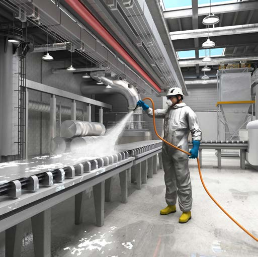
|
|
Abb. 72 Reinigung Förderbandanlage |
Abb. 73 Anlage gegen Einschalten gesichert |
|
Gefährdungen
|
|
Bei Reinigungsarbeiten an Produktionsanlagen selbst sowie in deren Umfeld können sich folgende Gefährdungen ergeben:
- Stoßen, Einquetschen und Einziehen von Körperteilen in Maschinen, Schneiden an scharfkantigen Gegenständen
- Angefahren- und Überfahren werden durch Betriebsverkehr
- Gefahr des Absturzes bei Arbeiten in Höhen, z. B. von Maschinen
- Stolpern, Rutschen, Stürzen auf glatten, feuchten Stand- und Laufflächen, auch auf Maschinen und Anlagen
- Verätzungen, Vergiftungen, Brand- und Explosionsgefährdung durch Gefahrstoffe in Reinigungsmitteln oder aus dem Produktionsprozess
- Stromschlag durch Berühren von spannungsführenden Teilen
- Einschränkung durch räumliche Enge, z. B. Zwangshaltung, schwer zugängliche Bereiche
- Lärm
- Hitze (z. B. in Gießereien)
- unzureichende bzw. fehlende Beleuchtung
- Lärm durch laufende Anlagen
|
|
Maßnahmen
|
|
Informationen zur sicheren Reinigung von Maschinen bzw. Anlagen entnehmen Sie der Betriebsanleitung der Herstellerfirma oder der Gefährdungsbeurteilung und Betriebsanweisung des Betriebes, in dem Sie tätig sind.
Stoßen, Quetschen, Schneiden
Vermeiden von manuellen Tätigkeiten durch Einsatz geeigneter Arbeitsverfahren, z. B. Strahlverfahren.
Stellen Sie sicher, dass Maschinen außer Betrieb gesetzt werden und die unbeabsichtigte Inbetriebnahme verhindert wird.
Teile, die vor unbeabsichtigter Bewegung gesichert werden sollen, blockieren.
Tragen von Schutzhandschuhen, die vor Schnittverletzungen schützen, z. B. Kettenhandschuhe in fleischverarbeitenden Betrieben bei Arbeiten an Cuttermessern.
Angefahren- und Überfahren werden
Tragen Sie dafür Sorge, dass gekennzeichnete Wege genutzt werden und ggf. Warnkleidung getragen wird.
Abb. 74 Gefährlicher Verkehrsweg
Absturz
Führen Sie Reinigungsarbeiten von Arbeitsplätzen aus durch, die mit Seitenschutz gesichert sind. Oder verwenden Sie Arbeitsmittel wie Podestleitern, Fahrgerüste oder Arbeitsbühnen. Sollten Arbeiten unter Verwendung von PSA gegen Absturz ausgeführt werden müssen, prüfen Sie, ob geeignete Anschlagpunkte vorhanden sind.
Stolpern, Rutschen, Stürzen
Sorgen Sie dafür, dass Schuhwerk getragen wird, welches den Arbeitsplatzerfordernissen entspricht, z. B. im Hinblick auf Rutschhemmung, Chemikalienresistenz.
Gefahrstoffe
Der oder die Auftraggebende hat Sie über Gefahrstoffquellen in seinem Betrieb und spezifische Verhaltensregeln zu informieren. Kann eine Gefährdung Ihrer Beschäftigten durch solche Gefahrstoffe nicht ausgeschlossen werden, so sind bei der Durchführung Ihrer Gefährdungsbeurteilung und bei der Erstellung der Betriebsanweisung die Angaben des Betriebes, in dem Sie tätig sind, zu berücksichtigen und die Schutzmaßnahmen mit ihm abzustimmen.
In der Industriereinigung kommen Reinigungsmittel zum Einsatz, die zu einer erhöhten Gefährdung führen können. Informieren Sie sich z. B. anhand der Angaben im Sicherheitsdatenblatt über die gefährlichen Eigenschaften des Produkts und die Vorgaben der Herstellerfirma zu Schutzmaßnahmen. Berücksichtigen Sie bei der Festlegung geeigneter Schutzmaßnahmen das angewendete Arbeitsverfahren (z. B. Sprühverfahren) sowie die Arbeitsumgebung und -bedingungen, z. B. Raumgröße, Lüftungsverhältnisse, Gefahrstoff- oder Zündquellen in der Umgebung.
Brand- und Explosionsgefährdung
Informieren Sie sich beim Auftraggebenden über mögliche betriebliche Brand- und Explosionsgefährdungen und unterweisen Sie ggf. Ihre Beschäftigten über die Schutzmaßnahmen und Verhaltensregeln.
Werden entzündbare Reinigungsmittel eingesetzt, sind die Maßnahmen zum Brand- und Explosionsschutz mit den Auftraggebenden abzustimmen.
Maßnahmen können sein:
- Verbot des Rauchens oder anderer Zündquellen, wie nicht explosionsgeschützte Werkzeuge oder Maschinen
- Industrietücher, die zur Aufnahme von Ölen und Lösungsmitteln eingesetzt werden, in verschließbaren Metallbehältern sammeln und entsorgen
- für ausreichende Belüftung sorgen
Strom
Zu reinigende Anlagen oder Maschinen in Absprache mit dem Kundenbetrieb vom speisenden Stromnetz trennen, z. B. durch Netzstecker ziehen oder mit dafür vorgesehenem Schalter ausschalten und vor unbeabsichtigter Wiederinbetriebnahme sichern.
Wählen Sie die elektrischen Betriebsmittel anhand der Anforderungen der Arbeitsumgebungen aus (z. B. ex-geschützt, strahlwassergeschützt, staubdicht).
Räumliche Enge
Planen Sie entsprechend der Aufgabe und des Einsatzes die Reinigungsarbeiten. Legen Sie alle relevanten Angaben schriftlich fest, also Angaben zu
- den durchzuführenden Maßnahmen
- den erforderlichen Schutz- und Sicherheitsmaßnahmen (z. B. Schutz gegen Einziehen)
- der Festsetzung von beweglichen Maschinenteilen
- einzusetzender PSA
- vorgesehenen Notfallmaßnahmen
- Verantwortlichkeiten
Unterweisen Sie Ihre Beschäftigten hinsichtlich der besonderen Gefährdungen und Vorsichtsmaßnahmen bei Arbeiten in räumlicher Enge, ggfs. auch anhand der Betriebsanleitungen von Anlagen.
Lärm
Sorgen Sie für ausreichende Gehörschutzmittel und veranlassen Sie die erforderlichen Lärmvorsorgen. Informationen zu den Lärmbereichen liefert der Betrieb, in dem Sie tätig werden.
Hitze
Eine ausreichende Getränkeaufnahme (mindestens 2,5 l täglich) trägt wesentlich zur Herabsetzung der Hitzebeanspruchung bei. Sorgen Sie dafür, dass häufiges Trinken möglich ist.
Beleuchtung
Prüfen Sie, ob eine ausreichend hohe Beleuchtungsstärke nach Art der Tätigkeit beziehungsweise des Raumes oder Bereiches vorhanden ist. Ist ein zusätzlicher Einsatz von Beleuchtungsmitteln erforderlich, sind diese nach den Einsatzbedingungen auszuwählen.
|
3.9 Reinigung von Verkehrsmitteln
Die Reinigung von Verkehrsmitteln umfasst neben Bussen und Bahnen auch Flugzeuge. Der Umfang der Reinigungsarbeiten beinhaltet neben der Innen- oft auch die Außenreinigung des jeweiligen Verkehrsmittels. Bei der Unterhaltsreinigung, der Sanitär-, Glas- und Sonderreinigung ergeben sich zusätzliche Gefährdungen durch die sehr begrenzten Reinigungszeiten, die engen Einsatzbereiche sowie die Arbeitsumgebung.
|
|
Abb. 75 Auf dem Weg zur Flugzeugreinigung |
Abb. 76 Busreinigung |
|
Gefährdungen
|
|
In den Bereichen der Verkehrsmittelreinigung können folgende Gefährdungen auftreten
- Stolpern, Rutschen und Stürzen
- elektrische Gefährdungen
- Gefahrstoffe (Graffitientfernung, Desinfektion)
- Angefahren und Überfahren werden durch Betriebsverkehr
- Stoßen, Schneid- und Stichverletzung
- Biostoffe (z. B. Blut, Fäkalien, Erbrochenes, kontaminierte Kanülen/Spritzen)
Abb. 77 In der Bahn
|
|
Maßnahmen
|
|
Während die Außenreinigung von Verkehrsmitteln überwiegend in speziellen Waschstraßen, bzw. -anlagen mit wenig Zugangsmöglichkeiten erfolgt, müssen für die Innenreinigung oft lange Wege zu den Innenreinigungswaschplätzen zurückgelegt werden. Aus den örtlichen Gegebenheiten, wie auch aus den Besonderheiten der Arbeitsplätze in den Verkehrsmitteln ergeben sich die nachfolgenden Maßnahmen:
Stolpern, Rutschen, Stürzen
Achten Sie darauf, dass die Verkehrswege zu den Arbeitsplätzen, aber auch die Arbeitsplätze in den Verkehrsmitteln so gestaltet sind, dass diese sicher begangen, bzw. befahren werden können. Verkehrswege müssen frei sein von Hindernissen, Stolperfallen und Öffnungen, in die man hineintreten kann. Sorgen Sie dafür, dass nur festgelegte Verkehrswege genutzt werden.
Stellen Sie Ihrem Personal in vorgegebenen Bereichen, wie Betriebshöfen, S3 Sicherheitsschuhe zur Verfügung und sorgen Sie dafür, dass diese getragen werden. Weisen Sie Ihre Beschäftigten darauf hin, zum Ein- und Ausstieg nur sichere Zugänge zu verwenden (z. B. Innenreinigungsbühnen oder Einstiegshilfen). Sorgen Sie für eine ausreichende Beleuchtung.
Elektrische Gefährdung
Für die Versorgung der elektrischen Betriebsmittel sind Speisepunkte mit Fehlerstromschutzeinrichtungen (RCD) erforderlich, stellen Sie deren Vorhandensein sicher.
Bevor Reinigungsarbeiten in der unmittelbaren Nähe von Freileitungen (z. B. Oberleitungen) durchgeführt werden sollen, müssen Sie den Betreiber darüber informieren. Er gibt Maßnahmen zum sicheren Arbeiten in der Nähe unter Spannung stehender Leitungen vor. Gegebenenfalls muss die Leitung durch den Betreiber freigeschaltet werden. Dazu ist eine entsprechende Terminplanung notwendig.
| |
|
Stellen Sie Ihren Beschäftigten akkubetriebene Maschinen zur Verfügung. |
Gefahrstoffe (Einsatz von Reinigungsmitteln, Graffitientfernung)
Bei der Reinigung von Verkehrsmitteln kommen Reinigungs- und Desinfektionsmittel sowie Graffiti-Entferner zum Einsatz, die zu einer erhöhten Gefährdung führen können. Informieren Sie sich anhand der Angaben im Sicherheitsdatenblatt oder in der GISBAU-Information über die gefährlichen Eigenschaften des Produkts und die erforderlichen Schutzmaßnahmen.
Berücksichtigen Sie bei der Festlegung geeigneter Schutzmaßnahmen das angewendete Arbeitsverfahren (z. B. Sprühen) sowie die Arbeitsumgebung und -bedingungen, z. B. Lüftungsverhältnisse oder Überkopfarbeiten. Erstellen Sie hierüber eine Betriebsanweisung.
Abb. 78 Graffitientfernung auf dem Betriebshof
Angefahren und Überfahren werden durch Betriebsverkehr
Tragen Sie dafür Sorge, dass gekennzeichnete/vorgegebene Wege genutzt werden und bei Werksverkehr geeignete Warnkleidung getragen wird. Stimmen Sie Zeitfenster für die Reinigungsarbeiten mit den auftraggebenden Betrieben ab und sorgen Sie für deren Einhaltung.
Stoßen, Schneid- und Stichverletzungen
Sorgen Sie dafür, dass Ihre Beschäftigten nicht in Behältnisse greifen. Stellen Sie Aufnahmehilfen (z. B. Greifzangen) zur Verfügung.
Biostoffe
Da bei der Reinigung von Verkehrsmitteln ein Kontakt mit Kontaminationen, z. B. mit Blut, Fäkalien, Erbrochenem, kontaminierten Kanülen/Spritzen, nicht auszuschließen ist, müssen entsprechende Schutzmaßnahmen mittels einer Gefährdungsbeurteilung ermittelt und im Anschluss festgelegt werden. Meist werden hierbei primär hygienische Maßnahmen ausreichen.
Je nach Einzelfall sind zusätzliche Vorkehrungen zum Schutz der betroffenen Beschäftigten zu treffen.
|
3.10 Krankenhausreinigung
In Krankenhäusern werden Reinigungsarbeiten in allen Bereichen durchgeführt. Dabei unterscheiden sich diese in nicht-hygienerelevante Bereiche, hygienerelevante Bereiche, Bereiche, die besonders vor Infektionen geschützt werden müssen, und Bereiche, von denen besondere Infektionsgefahren ausgehen können. Gefährdungen können sich daher aus den eingesetzten Arbeitsmitteln und Arbeitsstoffen, insbesondere den Reinigungs- und Desinfektionsmitteln, aber auch aus der besonderen Arbeitsumgebung ergeben.
|
|
Abb. 79 Im Patientenzimmer |
Abb. 80 OP-Reinigung |
|
Gefährdungen
|
|
Für Ihre Beschäftigten können folgende Gefährdungen bestehen:
- Feuchtarbeit
- Stich- und Schnittverletzungen durch herumliegende oder unsachgemäß entsorgte Spritzen und sonstige scharfe Gegenstände
- Infektion durch Krankheitserreger:
- bei direktem Kontakt zu Körperflüssigkeiten, insbesondere Blut oder bei direktem Kontakt zu Ausscheidungen (z. B. Stuhl) von infektiösen Patientinnen und Patienten
- beim Transport von infektiösem Abfall (C-Abfall)
- Kontamination (z. B. Hepatitis B/C oder HIV) durch Stich- und Schnittverletzungen
- beim Einatmen von durch Tröpfcheninfektion übertragener Erreger (z. B. Tuberkulose)
- Sturz- oder Absturzgefahr durch Einsatz von Leitern und Tritten
- Reizungen und Allergien bei Hautkontakt mit Reinigungs- und Desinfektionsmitteln
- Strahlenbelastung durch Strahlung oder Kontamination in Strahlenschutzbereichen
|
|
Maßnahmen
|
|
Feuchtarbeit
Eine arbeitsmedizinische Vorsorge ist zu gewährleisten, wenn regelmäßig mehr als zwei Stunden am Tag Arbeiten im feuchten Milieu durchgeführt oder flüssigkeitsdichte Handschuhe (Feuchtarbeit) getragen werden.
Stich- und Schnittverletzung
Das Abfall- und Entsorgungskonzept des Krankenhausbetreibenden sieht in der Regel vor, dass spitze, scharfe und zerbrechliche Gegenstände (z. B. Spritzen, Kanülen) nur in geschlossenen, bruchsicheren und durchstichsicheren Behältern entsorgt werden dürfen.
Da eine unsachgemäße Entsorgung nicht auszuschließen ist, weisen Sie Ihr Personal darauf hin, nicht in Abfallbehältnisse (auch Wäschesäcke) hineinzugreifen und diese stets körperfern zu halten. Der Transport sollte in Wagen erfolgen, die seitlich geschlossen sind.
Sollten dennoch Spritzen, Kanülen aufgefunden werden, weisen Sie Ihre Beschäftigten darauf hin, diese nicht selbst zu entsorgen, sondern die Krankenhausbetreiber zu informieren.
Abb. 82 Entnahme Müllsack ohne Gefahr der Stichverletzung
Schutz vor Infektion
Das ist zu tun:
- Legen Sie die Arbeitsbereiche mit erhöhter Infektionsgefährdung fest.
- Die Infektionserreger sind durch die Hygieneverantwortlichen bzw. die Hygienekommission des oder der Auftraggebenden zu benennen.
- Legen Sie die persönlichen Schutzausrüstungen fest.
- Veranlassen Sie die arbeitsmedizinische Vorsorge durch die Betriebsärztin bzw. den Betriebsarzt.
- In Bereichen mit erhöhter Infektionsgefährdung besteht ein Beschäftigungsverbot für werdende und stillende Mütter.
Abb. 83 Im Patientenzimmer
Lassen Sie sich für die Festlegung der Maßnahmen von Ihrer betriebsärztlichen Betreuung beraten.
Stolpern, Rutschen, Stürzen
Sensibilisieren Sie Ihre Beschäftigten in Bezug auf die Unfallschwerpunkte glatte/feuchte Böden und Abstellen von Arbeitsmitteln auf Verkehrswegen und Fehltritte auf Treppen. Bei Rutschgefahr sollten Glättewarnschilder aufgestellt oder am Reinigungswagen befestigt werden. Sorgen Sie dafür, dass die Beschäftigten geeignetes, mindestens fersenumschließendes und rutschsicheres Schuhwerk verwenden. Schutzschuhe sind bei den Arbeiten in der Regel nicht erforderlich.
Elektrische Gefährdung
Staubsauger können sicher betrieben werden, wenn sichergestellt ist, dass nur geprüfte Steckdosen mit vorgeschaltetem FI-Schutzschalter vorhanden sind. Sorgen Sie dafür, dass die Beschäftigten vor jedem Einsatz elektrischer Betriebsmittel eine Sichtprüfung hinsichtlich beschädigter Isolierungen und Steckdosen vornehmen. Viele Schäden können vermieden werden, wenn die Leitungen am Stecker aus der Steckdose herausgezogen werden.
Umgang mit Reinigungs- und Desinfektionsmitteln
Bei der Unterhaltsreinigung werden Boden-, Oberflächen-, Sanitär- und Desinfektionsreiniger eingesetzt. Vor allem beim Umgang mit Konzentraten bestehen für Ihre Beschäftigten Gesundheitsgefahren.
Vor der Bestückung von Dosieranlagen hat eine Unterweisung zu erfolgen. Beim Dosieren mit Dosiereinrichtung und Zwangsdosierung ist eine Spritzgefahr auszuschließen. Eine Schutzbrille ist bei freihändiger Dosierung mit 5–10 l Kanistern wegen der erhöhten Spritzgefahr erforderlich. Die Dosiervorgaben und die Einwirkzeiten aus dem Desinfektionsplan einhalten. Reinigungslösung nur mit kaltem Wasser ansetzen.
Arm- und Handschmuck dürfen bei der Arbeit nicht getragen werden.
Einweghandschuhe (Untersuchungshandschuhe) aus Latex bieten in der Regel keinen Schutz gegenüber Reinigungsmitteln.
Bei alkoholischen Desinfektionsmitteln sind Wischverfahren Sprühverfahren vorzuziehen. Das Tragen von Atemschutz ist bei der Unterhaltsreinigung, auch bei Verwendung von desinfizierenden Wirkstoffen, nicht erforderlich.
Bei Reinigungsarbeiten mit kennzeichnungspflichtigen Unterhaltsreinigern ist eine Betriebsanweisung zu erstellen, die im Wesentlichen auf die Hautgefährdung abgestimmt ist (z. B. WINGIS: "Desinfektionsreiniger").
Sturz- und Absturzgefahr durch Einsatz von Leitern und Tritten
Unterweisen Sie die Beschäftigten über den Einsatz von Leitern. Sorgen Sie dafür, dass nur geprüfte Leitern und Tritte benutzt werden.
Strahlenbelastung durch Strahlung oder Kontamination in Strahlenschutzbereichen
Nehmen Sie vor Aufnahme der Arbeiten Kontakt zu den Strahlenschutzbeauftragten der Krankenhausbetreibenden auf und stimmen Sie mit ihm die Maßnahmen ab.
|